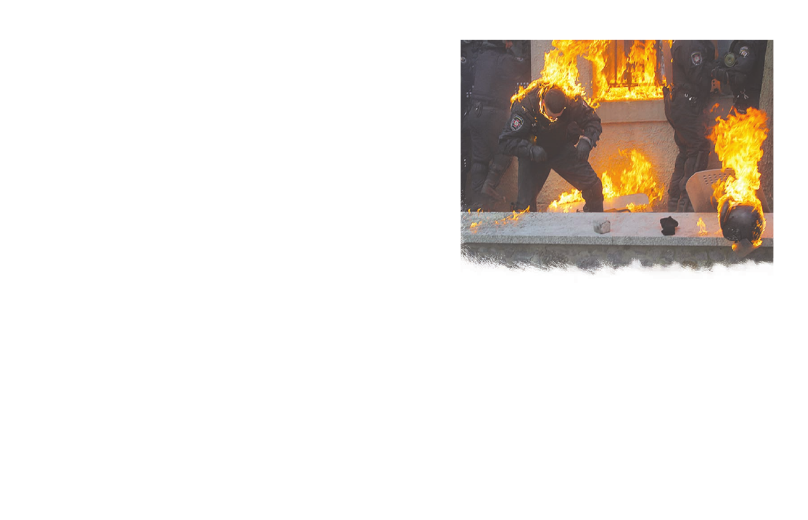
PAPEL BRANCO
VIOLAÇÃO DOS DIREITOS HUMANOS
E O ESTADO DE DIREITO
NA UCRÂNIA
(NOVEMBRO 2013 - MARÇO 2014)
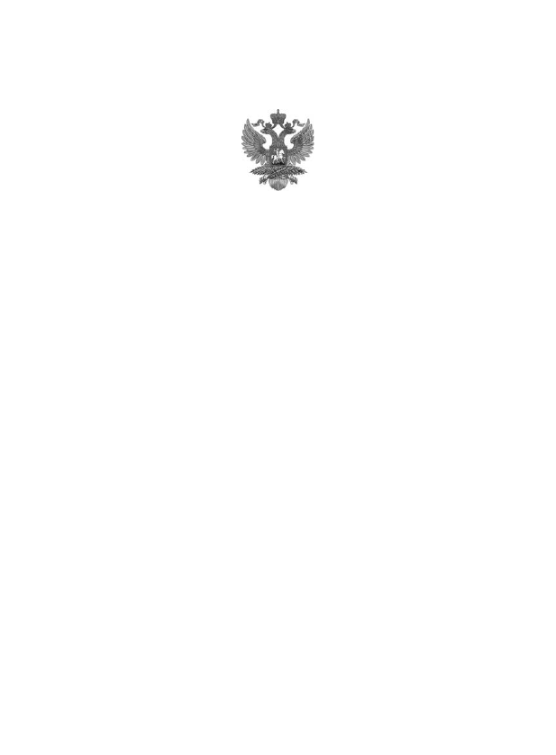
PAPEL BRANCO
VIOLAÇÃO DOS DIREITOS HUMANOS
E O ESTADO DE DIREITO
NA UCRÂNIA
(NOVEMBRO 2013 - MARÇO 2014)
Moscou
abril de 2014
Ministério das Relações Exteriores
Federação Russa

2
Livro branco sobre violações dos direitos humanos
e o Estado de direito na Ucrânia
ÍNDICE
Introdução
.................................................. . ..............................................
3
Violações do direito à vida, ordem
e segurança públicas, tortura,
tratamento desumano e ilegalidade
..............
cinco
Interferência nos assuntos internos de
um estado soberano
.................................................. . ........
27
Armamento, equipamentos e táticas
dos participantes do Euromaidan. Evidência
de violência deliberada e provocações dos
chamados manifestantes pacíficos
.........................
33
Violações do direito à liberdade de opinião, crenças,
inclusive políticas, o direito de expressá-las.
Restrição da liberdade de imprensa e intimidação de dissidentes.
Censura
.................................................. . ..............................................
41
Discriminação étnica
e linguística, xenofobia e extremismo racial.
Incitação ao ódio racial
..................................
51
Manifestações de intolerância por motivos religiosos,
incluindo ameaças contra a Igreja Ortodoxa Ucraniana do
Patriarcado de Moscou
.................................................. . ......
59
Conclusão
.................................................. . ..............................
63
Belaya_kniga_11_2013-03_2014-html.html
Introdução
3
Introdução
Este estudo abrange o período entre o final de novembro de 2013 e o final de
março de 2014 e é dedicado à situação com a provisão de direitos humanos e o estado
de direito que se desenvolveu na Ucrânia como resultado de uma tomada violenta do
poder e uma golpe inconstitucional.
Como base factual para este estudo, usamos os
resultados de um monitoramento cuidadoso da mídia ucraniana, russa e de alguns
meios de comunicação ocidentais, declarações e declarações dos líderes das “novas autoridades”
da Ucrânia e seus apoiadores, inúmeros relatos de testemunhas oculares, incluindo
os publicados por na Internet, e Veja também material baseado em
observações e entrevistas da cena coletadas pela ONG Fundação para o Estudo
da Democracia e pelo Escritório de Direitos Humanos de Moscou.
Cada seção deste estudo é precedida por trechos de
documentos internacionais fundamentais no campo dos direitos humanos,
cujas disposições e normas universais foram violadas na Ucrânia durante o
período especificado.
Não pretendemos reflectir no Livro Branco todos os trágicos acontecimentos
ocorridos na Ucrânia. Mas mesmo a lista longe de completa
das mais grosseiras violações das normas internacionais fundamentais
no campo dos direitos humanos e do Estado de direito, cometidas neste país
por forças ultranacionalistas, extremistas e neonazistas que
monopolizaram o protesto Euromaidan, permite-nos afirmar
que esses fenômenos eram de natureza massiva.
Belaya_kniga_11_2013-03_2014-html.html

4
Livro branco sobre violações dos direitos humanos
e o Estado de direito na Ucrânia
A principal tarefa do Livro Branco é chamar a atenção
da comunidade internacional e das principais estruturas internacionais de direitos humanos,
bem como organizações não governamentais relevantes, que ainda não
demonstraram a devida e imparcial atenção a esta questão, para esses fatos.
A história do século 20 ensinou lições trágicas que não é
apenas irresponsável, mas às vezes simplesmente criminosa, não levar em conta. O Livro Branco é um sinal
para aqueles que o esqueceram ou fingem tê-lo esquecido. Aqueles que, em nome de seus próprios
interesses egoístas, cinicamente, sob o pretexto de boas intenções e
demagogia pseudo-democrática, mergulham a população multimilionária e multiétnica
da Ucrânia no extremismo, na ilegalidade e em uma profunda crise
de identidade nacional.
O racismo, a xenofobia, a intolerância étnica, a glorificação dos nazis
e dos seus asseclas de Bandera devem ser eliminados o
mais rapidamente possível pelos esforços de solidariedade do povo ucraniano e da comunidade internacional
. A alternativa tem consequências tão devastadoras
para a paz, a estabilidade e o desenvolvimento democrático da Europa que é absolutamente
necessário evitá-la.
Belaya_kniga_11_2013-03_2014-html.html
Violações do direito à vida, à ordem pública e à segurança,
tortura, tratamento desumano e ilegalidade
cinco
Violações do direito à vida
ordem e segurança pública,
tortura, desumano
virando e cometendo iniquidade
Belaya_kniga_11_2013-03_2014-html.html
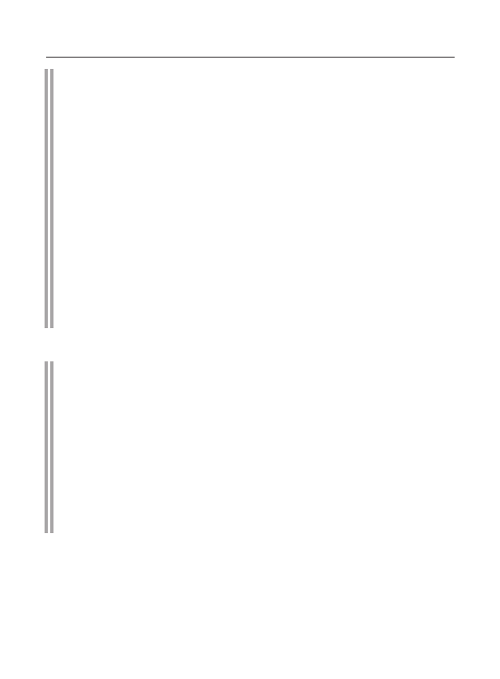
6
Livro branco sobre violações dos direitos humanos
e o Estado de direito na Ucrânia
Pacto Internacional sobre o Direito Civil
e Direitos Políticos (16 de dezembro de 1966)
Artigo 6
O direito à vida é o direito inalienável de todo ser humano.
Este direito é protegido por lei. Ninguém pode ser arbitrariamente privado
vida.
Artigo 7
. Ninguém será submetido a tortura ou tortura cruel, desonrosa
tratamento ou punição degradante ou degradante.
Artigo 20
Toda propaganda de guerra deve ser proibida por lei.
Artigo 21
O direito à reunião pacífica é reconhecido. Usando isso
lei não está sujeita a quaisquer restrições além daquelas impostas por
são regidos por lei e que são necessários em uma democracia
sociedade civil no interesse do Estado ou do bem-estar público
perigo, ordem pública, saúde e moral
população ou proteção dos direitos e liberdades de outros.
Artigo 26.
Todas as pessoas são iguais perante a lei e têm o direito sem qualquer
discriminação à igual proteção da lei.
Convenção para a Proteção dos Direitos Humanos e Liberdades Fundamentais
(Roma, 4 de novembro de 1950)
Artigo 2
O direito de cada pessoa à vida é protegido por lei. Nenhum
pode ser deliberadamente privado da vida, exceto em execução de morte
uma sentença proferida por um tribunal por cometer um crime contra
que a lei prevê tal punição.
A privação da vida não será considerada uma violação deste artigo.
tyi, quando for o resultado de uma ação absolutamente necessária
mudança de poder ... para suprimir, de acordo com a lei, um motim ou
rebelião.
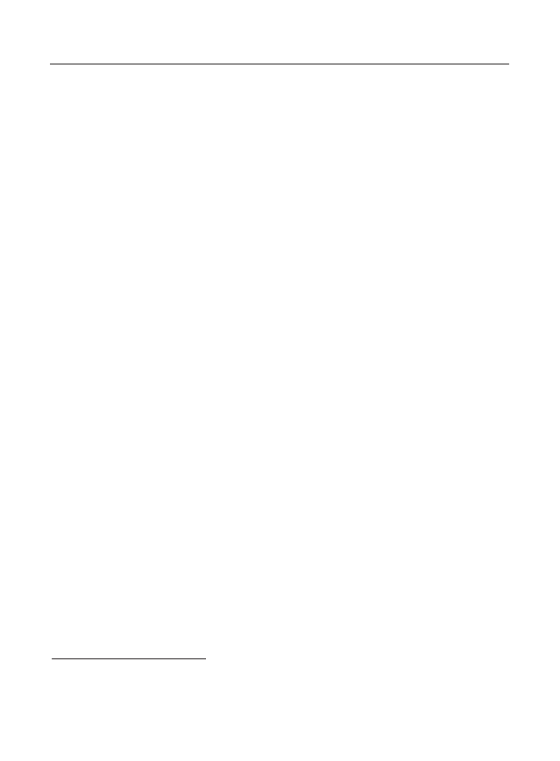
Violações do direito à vida, à ordem pública e à segurança,
tortura, tratamento desumano e ilegalidade
7
24 de novembro de 2013
em Kiev, o primeiro choque de manifestações
camarada com a polícia
1
. Após o comício da oposição "Por uma Ucrânia Europeia"
manifestantes (principalmente apoiadores da Associação Nacionalista de Toda a Ucrânia
(VO) “Svoboda”) tentaram invadir o prédio do Gabinete de
Ministros da Ucrânia e bloquear a passagem de veículos do governo
. Manifestantes agressivos atacaram a polícia e quebraram a
barreira. Ao mesmo tempo, militantes jogaram explosivos em policiais.
A polícia respondeu com gás lacrimogêneo.
26 a 27 de novembro de 2013
ativistas de vários grupos radicais de direita - movimento
niya “Trident im. Stepan Bandera, a Assembleia Sócio-Nacional/
Patriota da Ucrânia (SNA/PU), o partido da Assembleia Nacional Ucraniana
(UNA), o grupo Martelo Branco, bem como representantes de torcedores de futebol , formaram uma associação informal no Euromaidan " Setor
Direito "
. Sob essa “marca”, houve uma nova mobilização
de ativistas nacionais radicais para participar da rebelião Euromaidan, incluindo
um confronto violento com as agências de aplicação da lei.
30 de novembro de 2013
na Praça Mikhailovskaya em Kiev, radicais de direita
ativistas, principalmente associados ao “Setor Direito”, organizaram
treinamento para todos nas táticas de confronto vigoroso com
policiais, incluindo a prática de ações em grupo
usando meios improvisados como armas afiadas. A
formação de destacamentos da chamada autodefesa Maidan começou.
1º de dezembro
2013
durante uma manifestação em massa em Kiev, ativistas do
grupos onais radicais, assim como hooligans de futebol que se juntaram a eles,
ativistas radicais individuais do VO “Svoboda” e
jovens protestantes realizaram uma série de ações ilegais.
Radicais de direita participaram da apreensão forçada dos prédios da
Administração Estatal da Cidade de Kiev e da Casa dos Sindicatos,
bem como em confrontos com a polícia. Os partidários do "Setor Direito"
se entrincheiraram no quinto andar da Casa dos Sindicatos. Ativistas do partido VO “Svoboda” realmente assumiram o controle do prédio da Administração
Estatal da Cidade de Kiev .
Neste edifício por todos os três meses
1
A PARTIR DE
21
novembro
2013
G
.
dentro
Kiev
iniciado
estoque
protesto
sob
em geral
nome
"
euromaidan
",
que
eram
causado
desacordo
fila
oposição
festas
a partir de
decisão
régua
-
stva
Ucrânia
cerca de
suspensão
assinatura
Contratos
cerca de
associações
a partir de
europeu
co
-
derrapagem
.

8
Livro branco sobre violações dos direitos humanos
e o Estado de direito na Ucrânia
ali estava a sede de um dos grupos mais radicais de manifestantes
, o grupo juvenil neonazista
S14 (ou Sich), orientado para o VO Svoboda, liderado por Yevgeny Karas.
O apogeu das ações violentas contra as autoridades legítimas em 1º de dezembro de
2013 foi uma tentativa de romper o cordão de isolamento dos militares das Tropas Internas
e policiais na rua. Bankova (o chamado assalto à Administração do
Presidente da Ucrânia).
Na noite do mesmo dia, ativistas de associações radicais de direita, incluindo
membros da VO “Svoboda”, cometeram um ato de vandalismo contra o monumento a
Lenin na Shevchenko Boulevard e provocaram confrontos com membros
das forças especiais da polícia.
2 de dezembro de 2013
as primeiras tentativas foram feitas para apreender
edifícios de administrações estaduais regionais (RAS) na Ucrânia Ocidental - Ivano-
Frankivsk (pelas forças dos militantes do VO "Svoboda", a captura falhou) e Volyn
(pelas forças dos apoiadores do VO "Batkivshchyna", recapturados por a polícia).
8 de dezembro de 2013
na avenida de Kiev Shevchenko um grupo de extremistas
demoliu e destruiu o monumento a V.I. Lênin. A responsabilidade por este ato
de vandalismo foi assumida pelo parlamentar VO “Svoboda”.
10 de dezembro de 2013
os opositores do atual governo tiveram uma feroz
resistência aos agentes da lei que tentaram
cumprir a decisão do Tribunal Distrital Shevchenkovsky de Kiev, que proibia
o bloqueio de edifícios governamentais na Ucrânia e dificultava as
atividades das estruturas estatais. Os apoiadores do Euromaidan, tendo se barricado
nas instalações da Administração Estatal da Cidade de Kiev,
deliberadamente provocaram a polícia a usar a força (
pedras foram jogadas nos policiais das janelas, elas foram derramadas com água das mangueiras de incêndio). Nesta situação,
a liderança do Ministério da Administração Interna da Ucrânia foi forçada a retirar as forças especiais da polícia
do prédio capturado.
11 de dezembro de 2013
"Euromaidan" erguido em torno do perímetro de Maid-
barricadas em e parte de Khreshchatyk Boulevard, e também anunciou a retomada dos
piquetes no bairro do governo.
19 a 25 de janeiro de 2014
militantes do "Setor Direita" entraram em uma feroz
confrontos com as forças policiais na rua. Grushevsky. Mais de 300 pessoas
(a maioria deles policiais) ficaram feridas.
Belaya_kniga_11_2013-03_2014-html.html

Violações do direito à vida, à ordem pública e à segurança,
tortura, tratamento desumano e ilegalidade
nove
22 de janeiro de 2014
houve uma apreensão forçada da administração estadual do distrito de Brody
rações da região de Lviv (pelas forças do VO "Svoboda").
23 de janeiro de 2014
a captura forçada de Lviv, Ternopil
e a Administração Estatal Regional de Rivne (com a ajuda do VO "Svoboda").
A PARTIR DE
24 de janeiro de 2014
sob o controle de VO "Svoboda" nas regiões são formados
as chamadas unidades de autodefesa popular e os chamados
conselhos populares. Os preparativos para a implementação da rebelião e a tomada do poder em Kiev estão começando, a
arrecadação de fundos e munição estão sendo organizadas para os participantes dos distúrbios no Kiev
Maidan.
24 a 26 de janeiro de 2014
tentativas foram feitas para apreender à força edifícios com
ministérios em Sumy, Zhitomir, Poltava, Zaporozhye, Dnepropetrovsk,
Uzhgorod.
25 de janeiro de 2014
ativistas do movimento radical "Causa Comum"
foi feita uma tentativa de apreensão das instalações do Ministério da Energia e
Indústria do Carvão da Ucrânia.
25 de janeiro de 2014
ativistas do movimento radical "Causa Comum" apreenderam
edifício do Ministério da Justiça da Ucrânia.
27 de janeiro de 2014
prédios foram apreendidos por opositores do atual governo
administrações estaduais regionais de todas as regiões da Ucrânia Ocidental, com exceção da
região Transcarpática.
14 de fevereiro de 2014
na região de Lviv, a casa de um deputado do Partido da
onov A. Alemão.
18 de fevereiro de 2014
Os militantes do "Setor Direita" tomaram o prédio da sede
galerias de tiro do Partido das Regiões em Kiev. Dois homens foram brutalmente assassinados. Um foi fechado
no porão, um coquetel molotov foi jogado lá e ele morreu sufocado e queimado.
Outro foi esmagado na cabeça e jogado de um lance de escadas. As
mulheres no prédio foram despidas até ficarem seminuas, pintadas nas costas
com seus símbolos e slogans e levadas para a rua dessa forma.
Membro da Verkhovna Rada da Ucrânia do Partido das Regiões D. Svyatash foi severamente espancado.
18 de fevereiro de 2014
partidários de "Euromaidan" fizeram tentativas
apreensão dos corpos do Ministério da Administração Interna, do Serviço de Segurança da Ucrânia (SBU) nas regiões de Ternopil
e Ivano-Frankivsk para apreender armas.
18 a 19 de fevereiro de 2014
queimou e destruiu uma série de edifícios no centro
Kiev (entre eles o Ministério da Saúde da Ucrânia, a Câmara Central de Oficiais, a Câmara dos
Belaya_kniga_11_2013-03_2014-html.html

10
Livro branco sobre violações dos direitos humanos
e o Estado de direito na Ucrânia
sindicatos). Os extremistas tomaram os edifícios do conservatório (a
sede da “revolução europeia” foi instalada lá), o Conselho Nacional de Televisão e Radiodifusão
da Ucrânia e os Correios da capital, e o hotel “Ucrânia”.
18 a 21 de fevereiro de 2014
Demônios de rua em grande escala retomados em Kiev
procedimentos, durante os quais, de acordo com o Ministério da Saúde da Ucrânia, 77 pessoas foram mortas
(incluindo 16 policiais), mais de mil pessoas
ficaram feridas.
À noite
de 18 a 19 de fevereiro de 2014
grupos de radicais foram capturados
no edifício da Administração Estatal Regional de Lviv, foram cometidos pogroms nos edifícios do Ministério da Administração Interna na
região de Lviv, no Ministério Público da região de Lviv, no Gabinete do Serviço de Segurança
(SSBU) da Ucrânia na região de Lviv. Após os pogroms nos prédios do Ministério da Administração Interna e do Serviço de Segurança da Ucrânia
, os policiais que estavam saindo de lá foram arrancados das alças, dos uniformes
e jogados em uma fogueira acesa em frente à entrada dos prédios.
A unidade militar 4114 das tropas internas do Ministério de Assuntos Internos da Ucrânia em Lvov foi incendiada, os soldados
da unidade como resultado do incêndio perderam completamente munições, armas e um lugar
para dormir (o quartel, arsenal e despensas incendiadas).
19 de fevereiro de 2014
em Lvov, a administração da cidade foi apreendida
do Ministério da Administração Interna e quatro departamentos de polícia regionais centrais, incluindo as
salas de armas dos departamentos regionais (até 1.300 armas de fogo foram roubadas). Listas pessoais de membros do Partido das Regiões com seus números de telefone celular (cerca de 150 pessoas)
foram afixadas no prédio do Ministério Público .
19 de fevereiro de 2014
ativistas da chamada autodefesa popular
Novos bloqueios de estradas foram criados em estradas estaduais e regionais,
bem como nas entradas das principais cidades da Ucrânia Ocidental.
19 de fevereiro de 2014
em Lutsk foi severamente espancado e torturado publicamente
Kam Governador da Administração Estatal Regional de Volyn A. Bashkalenko. Ele
foi algemado ao local do “Euromaidan” local e exigiu que assinasse uma
carta de demissão “voluntária”. Após a recusa, ele foi jogado de
joelhos, ao cair, bateu a cabeça no chão, quebrando a testa. Eles jogaram
cinco litros de água nele e novamente o acorrentaram ao palco. Quando isso não funcionou,
os ativistas do Euromaidan levaram o governador para uma direção desconhecida, e
um grupo de bandidos foi enviado à sua casa para pressionar seus familiares.
19 de fevereiro de 2014
perto da cidade de Korsun-Shevchenkovsky (Cherkasy
região), vários autocarros, nos quais os participantes do
comício contra a integração europeia na Praça Mikhailovskaya em Kiev regressavam à Crimeia, foram
alvejados com armas de fogo e parados na barricada com bandeiras
Belaya_kniga_11_2013-03_2014-html.html

Violações do direito à vida, à ordem pública e à segurança,
tortura, tratamento desumano e ilegalidade
onze
UPA, as partes "Udar" e VO "Svoboda". Pessoas – homens e mulheres – foram retiradas
dos ônibus por um “corredor” de militantes, que os espancaram com bastões
e pás sapadores. Em seguida, os manifestantes foram jogados em uma pilha na
beira da estrada e encharcados com gasolina, ameaçando incendiá-los. Da multidão de militantes, segundo
testemunhas oculares, eles gritaram: “Espere, nós iremos até você na Crimeia novamente. Nós vamos
cortar e atirar em você, que não foi finalizado e não foi baleado.” Depois disso, muitos
crimeanos foram despidos de seus sapatos “para as necessidades dos combatentes Maidan” e conduzidos ao redor dos ônibus,
forçando-os a coletar cacos de vidro. A humilhação e o bullying continuaram
por várias horas. Houve vítimas entre as vítimas.
A maioria dos ônibus foram queimados. A polícia local chamou
não ouse interferir.
21 de fevereiro de 2014
em um posto de controle em ativistas de Rivne (Ucrânia Ocidental)
"Autodefesa do Povo" disparou contra um ônibus com turistas bielorrussos
que estavam de férias para a Ucrânia Ocidental.
Como resultado, o motorista do ônibus, cidadão da Rússia, foi hospitalizado com um ferimento de bala .
21 de fevereiro de 2014
O Presidente da Ucrânia V. Yanukovych e os líderes das três oposição
partidos políticos — V. Klitschko (Partido Udar), A. Yatsenyuk (VO Batkivshchyna),
O. Tyahnybok (VO Svoboda) — por intermédio dos Ministros dos Negócios
Estrangeiros da Alemanha, Polónia e França, assinaram um Acordo sobre a resolução de a
crise na Ucrânia que previa, entre outras coisas, o regresso à
Constituição de 2004, uma reforma constitucional (até setembro de 2014),
a organização de eleições presidenciais antecipadas até dezembro de 2014,
a formação de um governo de unidade nacional, como bem como a liberação de
prédios administrativos e públicos, a entrega de armas ilegais
e a renúncia ao uso da força por ambos os lados.
No mesmo dia, durante o anúncio público sobre o Maidan pelos líderes da
oposição parlamentar sobre as condições para a assinatura do Acordo, o representante da
chamada autodefesa do Maidan, V. Parasyuk, afirmou que ele e o a autodefesa
não estava satisfeita com as reformas políticas graduais
especificadas no documento e exigia a renúncia imediata do presidente V. Yanukovych
– caso contrário, a autodefesa iria invadir
a administração do presidente e a Verkhovna Rada da Ucrânia. Esta declaração foi
recebida com aplausos. O líder do Setor Direito, D. Yarosh, afirmou que o Acordo
não contém obrigações claras sobre a renúncia do presidente
, a dissolução da Verkhovna Rada e a punição dos chefes das agências de aplicação da lei
e executores de "ordens criminais". Ele chamou o Acordo de "mais um
borrão de olhos" e se recusou a cumpri-lo.
Belaya_kniga_11_2013-03_2014-html.html

12
Livro branco sobre violações dos direitos humanos
e o Estado de direito na Ucrânia
21 a 23 de fevereiro de 2014
apoiantes do "Euromaidan" em 18 cidades da Ucrânia
monumentos a V. I. Lenin (entre eles Dnepropetrovsk, Poltava, Chernihiv
, Kherson, Sumy e Zhitomir).
21 de fevereiro de 2014
Representantes do "Setor Direito" invadiram a casa do prefeito
da cidade de Tysmenitsa, região de Ivano-Frankivsk, B. Darchin e
procurou. Procuravam alguns documentos e o próprio prefeito, que conseguiu fugir. No
dia seguinte, B. Darchin escreveu uma carta de demissão.
22 de fevereiro de 2014
desmantelado na cidade de Stryi, região de Lviv
monumento ao soldado soviético.
Na noite de
22 de fevereiro de 2014
Ativistas do Euromaidan apreendidos
bairro do governo, abandonado por policiais, e apresentou
uma série de novas demandas, em particular, a renúncia imediata do presidente
V. Yanukovych.
22 de fevereiro de 2014
Presidente da Verkhovna Rada da Ucrânia V. Rybak (Par-
das regiões) apresentou uma carta de demissão por motivo de doença e necessidade
de tratamento (segundo dados não oficiais, o motivo de sua demissão foi o
medo por sua segurança).
A. Turchynov (VO "Batkivshchyna") foi eleito o novo presidente do parlamento ucraniano .
O primeiro vice-presidente da Verkhovna Rada, membro do Partido Comunista da Ucrânia (CPU) I. Kaletnik também escreveu demissões . É indicativo
que todo o período subsequente foi marcado por intimidações maciças por
partidários de Euromaidan de deputados da Verkhovna Rada do Partido das
Regiões e do Partido Comunista da Ucrânia.
22 de fevereiro de 2014
uma multidão de simpatizantes do Euromaidan pegou um deputado de
Partido das Regiões N. Shufrych na saída do edifício da Verkhovna Rada da Ucrânia.
Apenas a intervenção do líder do partido "Blow" V. Klitschko com uma chamada para não administrar
o linchamento o salvou de represálias.
22 de fevereiro de 2014
partidários do "Euromaidan" foi capturado e submetido a
linchamento e tortura, o primeiro secretário do Comitê da Cidade de Lviv do Partido Comunista da Ucrânia R. Vasilko.
De acordo com testemunhas oculares, eles enfiaram agulhas sob suas unhas, perfuraram seu
pulmão direito, quebraram três costelas, seu nariz e osso facial e ameaçaram destruir sua família.
Após torturas severas, R. Vasilko foi parar no hospital, de onde, devido a
ameaças contínuas, foi levado para o exterior por seus parentes.
Belaya_kniga_11_2013-03_2014-html.html

Violações do direito à vida, à ordem pública e à segurança,
tortura, tratamento desumano e ilegalidade
13
O escritório central e o escritório editorial do jornal do partido do Partido Comunista da Ucrânia
em Kiev, os escritórios do comitê da cidade de Kiev do Partido Comunista da Ucrânia, os
comitês distritais de Pechersk e Svyatoshinsky do Partido Comunista da Ucrânia em Kiev foram destruídos .
Praticamente todos os comitês regionais do Partido Comunista da Ucrânia foram seriamente afetados, mas especialmente os comitês regionais de
Zhytomyr, Chernihiv, Sumy, Vinnitsa, Volyn, Rivne
, todos os comitês distritais. Os escritórios dos
comitês regionais e municipais de Volyn e Lutsk foram apreendidos, muitas outras instalações do partido foram tomadas sob controle por
grupos armados ilegais.
O CPU, embora continuando a ser um partido parlamentar legal,
foi forçado a deixar de existir. Por temer por suas
vidas, a maioria dos deputados da
facção do Partido Comunista na Verkhovna Rada da Ucrânia mudou-se para a Crimeia ou a Rússia. Os poucos deputados que permaneceram no parlamento
, em sinal de protesto contra a ilegalidade no país, não participaram
da votação.
22 de fevereiro de 2014
em Lviv no palco instalado no centro
praça da cidade perto do monumento a T.G. Shevchenko, os nacionalistas locais
forçaram os combatentes da divisão Lvov das forças especiais do Ministério da Administração Interna da Ucrânia "Berkut
" a se ajoelhar e pedir perdão por participar de ações contra
"Euromaidan" em Kiev.
Ações semelhantes foram realizadas em Ternopil, Ivano-Frankivsk e Lutsk.
23 de fevereiro de 2014
por decisão da Verkhovna Rada da Ucrânia, seu presidente A. Turchi-
atuação recém-nomeada Presidente da Ucrânia pelo período até 25 de maio de 2014. Ao mesmo tempo, o
legítimo Presidente da Ucrânia V. Yanukovych, que foi forçado a deixar
o país por causa da ameaça à sua vida e às vidas de seus entes queridos, durante um
coletiva de imprensa em Rostov-on-Don em 28 de fevereiro de 2014. declarou que
ainda é o legítimo chefe do Estado ucraniano, eleito
com base no livre arbítrio dos cidadãos de seu país. Yanukovych
observou que nenhuma das condições para
rescisão antecipada de
aumento dos poderes do chefe de Estado (declaração sobre
demissão, doença, morte ou impeachment) não foi cumprida
.
23 de fevereiro de 2014
Deputado do Povo O. Lyashko (líder do Partido Radical
Oleg Lyashko") apresentou à Verkhovna Rada da Ucrânia um projeto de resolução
sobre a proibição do Partido Comunista da Ucrânia e do Partido das Regiões.
A este respeito, o líder do Partido Comunista da Ucrânia P. Symonenko afirmou que tal passo seria uma violação
da lei, uma vez que a legislação afirma claramente que um partido
só pode ser banido por uma decisão judicial.
Belaya_kniga_11_2013-03_2014-html.html

quatorze
Livro branco sobre violações dos direitos humanos
e o Estado de direito na Ucrânia
23 de fevereiro de 2014
"Setor Direito" impôs uma homenagem às lojas de Kiev. Dia-
gi são cobrados por "guardar".
23 de fevereiro de 2014
em Uzhgorod, região Transcarpática, ativistas da comunidade local
"Setor Direito" foi amarrado a um poste em frente ao prédio da administração estadual regional
rações do chefe da alfândega Chop S. Kharchenko. Ameaçado de violência,
forçado a escrever uma carta de demissão.
23 de fevereiro de 2014
funcionários da promotoria da região de Volyn recorreram
para agir Procurador-Geral da Ucrânia com um pedido de protecção, uma vez que o
wikis do Setor Direito os obrigam a renunciar aos seus cargos e, no caso de
dissidência ameaça com armas de fogo.
24 de fevereiro de 2014
A Verkhovna Rada da Ucrânia aprovou uma resolução
"Em resposta aos fatos de violação pelos juízes do Tribunal Constitucional da Ucrânia-
outros juramentos de juiz”, que previa a rescisão antecipada
autoridades e demissão do cargo "por violação do juramento" de cinco
juízes do Tribunal Constitucional da Ucrânia, incluindo o Presidente do Tribunal Constitucional
Tribunal Nacional da Ucrânia. Além disso, e.sobre. Procurador-Geral da Ucrânia
instruído a abrir processos criminais contra todos os juízes que
alguns, na opinião dos deputados populares da Ucrânia, são culpados de tomar uma decisão
do Tribunal Constitucional da Ucrânia de 30 de setembro de 2010 nº 20-rp/2010 (caso
n.º 1-45/2010 sobre o cumprimento do procedimento de alteração da Constituição
Ucrânia).
Comentando esta resolução da Verkhovna Rada da Ucrânia, a Constituição
O Tribunal Constitucional da Federação Russa, em sua declaração, enfatizou que
“levantando a questão de levar os juízes da mais alta corte do país a prestar contas.
responsabilidade pelo que aceitaram no exercício do poder judiciário - no pré-
assuntos de seus poderes e com base em sua própria convicção interna
denia - uma decisão, cuja injustiça deliberada não foi estabelecida,
permite expressar dúvidas sobre a observância de garantias básicas no país
estatuto de juiz.
24 e 27 de fevereiro de 2014
em duas etapas, deputados da Verkhovna Rada da Ucrânia
realizou uma anistia política, libertando 28 pessoas que foram
em centro de prisão preventiva por suspeita de cometer crimes ou já reconhecido
culpado de cometê-los. É significativo que nem todos anistiados
banheiros, que foram passados ao público como "presos políticos",
eram vistos em qualquer tipo de atividade política.
Por exemplo, Sergei e Dmitry Pavlychenko foram condenados pelo assassinato de um juiz.
Outro "preso político" anistiado Igor Gannenko era o líder
Belaya_kniga_11_2013-03_2014-html.html

Violações do direito à vida, à ordem pública e à segurança,
tortura, tratamento desumano e ilegalidade
15
Gangue neonazista cigana que cometeu crimes motivados por
ódio nacional, racial e religioso, inclusive de natureza antissemita
. O grupo de I. Gannenko, composto por quatro pessoas, foi condenado em janeiro
de 2013 por vandalismo (em março de 2013, o Tribunal de Recurso da região de Sumy
confirmou esta sentença).
Alguns radicais nacionais anistiados no halo romântico
dos "mártires" imediatamente correram para participar ativamente
da vida política do país. O prestígio conquistado à custa da prisão
permitiu-lhes manipular jovens e adolescentes propensos a glorificar tais
“combatentes da liberdade”. Em primeiro
lugar, isso se refere ao grupo de líderes do movimento Patriota da Ucrânia.
No período 2006-2011 esse grupo, segundo ONGs de direitos humanos, era
a organização neonazista mais séria da Ucrânia. O líder do movimento,
Andriy Biletsky, foi acusado junto com dois ativistas de tentativa de
homicídio (o chamado caso dos defensores de Rymarska). O ideólogo deste
Organização Oleg Odnorozhenko foi acusado de organizar vários espancamentos de opositores políticos com a participação
de militantes do movimento Patriota da Ucrânia .
Os mais famosos dos ativistas anistiados do
movimento Patriota da Ucrânia foram os chamados terroristas Vasylkiv – Igor Moseychuk
, Serhiy Bevz e Volodymyr Shpara, radicais nacionais de Vasylkiv , região de Kiev, que foram considerados culpados
em janeiro de 2014 pelo Kyiv-Svyatoshinsky Tribunal Distrital de Kiev Oblast
na preparação de um
ato terrorista. Os líderes anistiados do movimento “Patriota da Ucrânia”, poucos
dias após a sua libertação, juntaram-se à vida política da Ucrânia
sob a bandeira do “Setor Direito”.
24 de fevereiro de 2014
Coordenador do Setor Direito na Ucrânia Ocidental
A. Muzychko (Sashko Bily) compareceu a uma reunião do Presidium do
Conselho Regional da cidade de Rivne e, ameaçando com uma metralhadora e uma faca de caça, exigiu
que o Partido das Regiões “acomode-se para comprar moradia para os parentes
dos militantes mortos deste movimento”. Caso contrário, ele prometeu
confiscar os apartamentos e casas dos ex-líderes da região do Partido das
Regiões.
24 de fevereiro de 2014
Líder da facção do Partido das Regiões na Verkhovna Rada
Ucrânia A. Efremov disse em um briefing que a filha de um de seus colegas
da facção à noite, desconhecido sob o pretexto de "ver como
vivem os filhos dos deputados do povo" explodiu a porta e destruiu o apartamento em Kiev. Ele
Belaya_kniga_11_2013-03_2014-html.html

16
Livro branco sobre violações dos direitos humanos
e o Estado de direito na Ucrânia
também observou que os deputados do Partido das Regiões estão sob pressão,
então 74 deputados foram forçados a deixar a facção.
24 de fevereiro de 2014
em resposta à rejeição dos habitantes da Crimeia e da cidade de Seva-
Na esteira do “novo governo de Kiev”, os líderes de grupos radicais de direita
na Ucrânia (VO “Svoboda”, “Setor Direito”, “Patriota da Ucrânia”, “
Assembléia Social-Nacional da Ucrânia”) emitiram um comunicado sobre a necessidade de
“punir” tais ações dos crimeanos. Em particular, Igor Moseychuk
, um ativista da organização Patriota da Ucrânia condenado por terrorismo e anistiado pelo “novo governo”,
propôs publicamente formar “trens de amizade
” de militantes nacionalistas de direita e punir os habitantes da
península por sua vontade .
25 de fevereiro de 2014
em Ivano-Frankivsk ativistas do "Setor Direito"
e "Maidan autodefesa" invadiu o escritório da empresa "Serviço de Comércio"
e agarrou o diretor I. Dutka, que chefiava a
organização da cidade de Ivano-Frankivsk do Partido das Regiões. Ele foi levado para a multidão e forçado
a se ajoelhar para pedir perdão.
26 de fevereiro de 2014
O "regime de Kiev" autorizou o assalto à Ver-
Conselho da República Autônoma da Crimeia. O ataque contou com a presença de
ativistas de grupos radicais de direita ucranianos (“Setor Direito”), militantes
das organizações terroristas “Al-Qaeda” e “Hizb ut-Tahrir”, bem como
tártaros-wahhabis da Crimeia que simpatizam com eles. Como resultado de um
ataque maciço, civis que defendiam o
prédio administrativo do ataque de militantes foram mortos.
27 de fevereiro de 2014
apareceu na Internet um vídeo em que o coordenador
A. Muzychko (Sashko Bily) do “Setor Direito” na Ucrânia Ocidental
bate e humilha publicamente um funcionário do Ministério Público de Rovno A. Targony em seu local de
trabalho.
À noite
de 27 a 28 de fevereiro de 2014
Combatentes de autodefesa da Crimeia foram bem-sucedidos
evitar um grande ataque terrorista na península. Em um dos postos de controle, foi reprimida uma tentativa
de importar para o território da autonomia um explosivo
com capacidade de 400 quilos em equivalente de TNT. As autoridades investigadoras da
região de Kherson, na Ucrânia, para onde os detidos foram transferidos, ainda
não fizeram uma avaliação legal desses fatos.
No fim
Fevereiro de 2014
grupos armados ilegais tomaram conta
edifício administrativo do estúdio de cinema em homenagem a A. Dovzhenko. Os invasores
exigiram que tivessem acesso a uma oficina com armas e pirotecnia.
Belaya_kniga_11_2013-03_2014-html.html

Violações do direito à vida, à ordem pública e à segurança,
tortura, tratamento desumano e ilegalidade
17
Inicialmente
Março 2014
militantes do "Setor Direita" e outros
Com o apoio financeiro do “regime de Kiev” , organizações políticas
lançaram campanhas massivas nas redes sociais para intimidar os
crimenses. Sob ameaça de violência física, eles foram obrigados a não participar
de manifestações pacíficas de desacordo com o Maidan. Mensagens ameaçadoras foram recebidas nos telefones de
ativistas da Crimeia, incluindo figuras religiosas tártaras, seus parentes
e filhos.
1º de março de 2014
líder do "Setor Direito" D. Yarosh em sua página em
a rede social VKontakte virou-se para o líder dos terroristas chechenos
D. Umarov (em 2010 oficialmente incluído pelos Estados Unidos na lista de
terroristas internacionais, em 2011 o Conselho de Segurança da ONU incluído na lista de terroristas associados à Al-
Qaeda) com um pedido de apoio, inclusive organizando ataques terroristas no
território da Federação Russa.
1 e 2 de março de 2014
elementos nacionalistas da organização
se piquetes perto do Consulado Geral da Rússia em Lvov. À noite, os manifestantes
tentaram bloquear os
portões de entrada da missão diplomática russa com seus veículos pessoais.
3 de março de 2014
militantes do "Setor Direito" realizaram uma série de incêndios
instalações não residenciais e veículos pessoais de residentes da Crimeia.
3 de março de 2014
houve relatos de que parlamentares ucranianos
estão prontos para apresentar um projeto de lei que prevê uma pena de prisão de
3 a 10 anos para os cidadãos ucranianos que recebem a segunda cidadania.
O documento foi apresentado à Verkhovna Rada da Ucrânia no início de fevereiro de 2014 por
deputados da facção Batkivshchyna Oleksandr Brihynets, Leonid Yemets
e Andriy Pavlovsky. Os autores do projeto de lei ainda não consideram necessário
retirá-lo.
5 de março de 2014
apareceu na Internet em 26 de fevereiro de 2014.
gravação de uma conversa telefónica entre o Ministro dos Negócios Estrangeiros da Estónia,
U. Paet, e o Alto Representante da UE para os Negócios Estrangeiros e
a Política de Segurança, K. Ashton, na sequência da visita do Ministro dos Negócios Estrangeiros da Estónia à Ucrânia.
Durante a conversa, U. Paet referiu-se à informação recebida do médico-chefe do “Maidan”
O. Bogomolets sobre franco-atiradores disparando contra pessoas durante os protestos
em Kiev. Segundo ele, todas as evidências apontam para o fato de que tanto os manifestantes
quanto os policiais foram mortos pelos mesmos
atiradores. Ele disse que a nova coalizão não estava disposta a investigar as
circunstâncias exatas do que aconteceu e que entre as pessoas havia um crescimento rápido
Belaya_kniga_11_2013-03_2014-html.html

dezoito
Livro branco sobre violações dos direitos humanos
e o Estado de direito na Ucrânia
a mania de que por trás desses atiradores não estava V. Yanukovych, mas alguém da nova
coalizão.
U. Paet também observou que na Ucrânia há uma pressão muito forte
sobre os membros do parlamento. Ele disse que os jornalistas viram
pessoas com armas espancando o deputado bem em frente ao prédio Verkhovna Rada durante o dia.
6 de março de 2014
partidários do "Euromaidan" em Sebastopol cometeram um ataque militar
ataque armado a um ponto de recolha de ajuda humanitária.
6 de março de 2014
mensagens apareceram no fórum ucraniano antifashist.com
que o
governador popular da região de Donetsk, Pavlo Gubarev, que foi detido naquele dia pelo Serviço de Segurança da Ucrânia, foi submetido a tortura. Os relatórios
diziam que, de acordo com informações recebidas de médicos que trabalham no centro de detenção pré-julgamento do
SBU em Kiev, onde P. Gubarev foi mantido, ele foi severamente espancado várias vezes
e está em coma.
Os médicos do centro de internação pré-julgamento não têm oportunidades suficientes para prestar assistência a P. Gubarev , mas
as autoridades proíbem transferi-lo para outro centro médico, pois não querem tornar este incidente
público. Mais tarde, surgiram informações no portal Vremya Novostey de
que P. Gubarev não foi apenas espancado, mas torturado para forçá-lo a
confessar que estava realizando a tarefa dos serviços especiais russos.
8 de março de 2014
autodefesas em Simferopol detiveram dois
nacional-radical, natural da cidade de Rivne, anteriormente condenado. Admitiram que
, entre outros extremistas, foram enviados à Crimeia pela
associação do Setor Direita com o objetivo de penetrar em pequenos grupos (duas ou três pessoas)
na autonomia para desestabilizar a situação na península (cometendo
assaltos, organizando lutas e outros ofensas).
Ativistas de organizações radicais de direita ucranianas na Crimeia
durante a celebração do 200º aniversário de T.G. Shevchenko em Simferopol gritou
slogans extremistas, tentou
organizar uma briga encenada na frente das câmeras de jornalistas da Europa Ocidental especialmente convidados
com uma demonstração das “vítimas” nas mãos dos criminosos (perto do local
do comício, no carro de os provocadores, havia um jovem
, cuja cabeça foi pré-pintada com tinta vermelha, simulando
sangue).
8 de março de 2014
em Kharkov, cerca de 10 radicais nacionais atacaram ativistas
whists retornando de um comício contra as atuais autoridades de Kiev.
Como resultado, vários ativistas ficaram feridos, um deles foi posteriormente
hospitalizado.
Belaya_kniga_11_2013-03_2014-html.html

Violações do direito à vida, à ordem pública e à segurança,
tortura, tratamento desumano e ilegalidade
19
9 de março de 2014
em um café no centro de Kharkov, os militantes do "Setor Direito"
disparado da metralhadora de um empresário local E. Sloevsky. Como resultado do
bombardeio, outro visitante do café também foi morto e um garçom ficou ferido.
9 de março de 2014
casos registados de destruição de passaportes de residentes
Crimeia por provocadores que chegaram à península. Essas pessoas percorriam
as casas dos crimeanos sob o disfarce de policiais e representantes
de comissões eleitorais, pediam para mostrar seus passaportes e, quando os recebiam
, os rasgavam, tornando os documentos inválidos.
10 de março de 2014
ao tentar romper o posto de controle das forças de autodefesa da Crimeia
o ativista do Setor Direita usou uma arma, mas foi neutralizado
e encaminhado ao hospital.
Um morador de Ivano-Frankivsk, que chegou a Sebastopol, abriu fogo na
rua Efremov. Após a prisão, ele disse que
recebeu a arma e a tarefa de organizar uma provocação em Kiev. Ele também disse que
mais três cúmplices chegaram com ele. Eles alugaram um apartamento no distrito Gagarinsky
de Sebastopol. Durante uma busca dos folhetos do apartamento com
conteúdo extremista foram encontrados.
11 de março de 2014
às instalações do Ministério Público do distrito de Svyatoshinsky de Kiev
30 estranhos mascarados com paus de madeira entraram. Ameaçando com violência física
o promotor e membros de sua família, eles exigiram que ele
escrevesse uma carta de demissão. O promotor que se recusou a obedecer,
assim como seu colega, foram severamente espancados.
11 de março de 2014
em Rivne coordenador do "Setor Direito" na Ucrânia Ocidental
Ine A. Muzychko (Sashko Bily), em entrevista a um jornalista do jornal Vesti, anunciou
sua intenção de arrecadar 10 a 12 milhões de dólares americanos para anunciar um prêmio
“para aquele que bater em Putin”.
13 de março de 2014
em Donetsk sobre os manifestantes pacíficos que
pelas ruas da cidade, a fim de expressar sua atitude negativa em relação ao “novo
governo ucraniano” e apoiar a ideia de federalização do país,
militantes de grupos radicais de direita armados com armas traumáticas e bastões
, que começaram a vir para a cidade de outras regiões da Ucrânia no dia anterior , atacado
. Como resultado dos confrontos, uma pessoa foi morta e um grande número
ficou ferido.
13 de março de 2014
cerca de 20 homens armados com máscaras e camuflagem
foi à sucursal do Ukrbiznesbank no centro de Kiev e, tendo desarmado os guardas,
tentou entrar no cofre. Após as negociações, os bandidos
Belaya_kniga_11_2013-03_2014-html.html

vinte
Livro branco sobre violações dos direitos humanos
e o Estado de direito na Ucrânia
desistiu. Na delegacia, eles se autodenominavam "guerreiros de Nárnia" do
destacamento "autodefesa Maidan". De acordo com relatos da mídia, eles foram liberados depois de algumas horas
.
13 de março de 2014
destacamento de radicais nacionais em uniformes camuflados e blindados
coletes com varas de metal e bastões invadiram o prédio da promotoria do
distrito de Svyatoshinsky, em Kiev. Todos os funcionários da promotoria foram
retirados à força de seus escritórios para o corredor, após o que sete militantes atacaram
um dos promotores, Valentin Bryantsev, e começaram a espancá-lo com bastões
. Uma arma de choque também foi usada contra ele. Os atacantes exigiram
o arquivamento do processo criminal, que estava sendo analisado pelo
Tribunal Distrital de Svyatoshinsky, contra um de seus cúmplices.
14 de março de 2014
no centro de Kiev, um grupo de jovens mascarados, com
Kami "Setor Direito" e metralhadoras atacaram três moradores da casa. Cerca
de dez caras dispararam uma rajada automática no ar, atingiram um dos inquilinos
na cabeça com uma barra de metal.
12 pessoas camufladas entraram no prédio administrativo da Universidade Nacional de Aviação , autodenominando-se representantes do "
Setor Direito". Eles exigiram que o reitor da universidade, professor N. Kulik,
escrevesse uma carta de demissão. Apenas a
milícia chegou a tempo de salvar o cientista do massacre.
Os “Heróis de Maidan” também exigiram a demissão do diretor do Instituto de Estudos Ucranianos
, professor A. Tchaikovsky, e um grupo de funcionários do Instituto de
Memória Nacional (eles tentaram forçar este último a escrever a história da “revolução ”
e glorificar os “heróis do Maidan”).
O diretor do Departamento do Serviço de Migração da Ucrânia, N. Naumenko, que
se recusou a entregar os arquivos de refugiados aos militantes do Setor Direita, foi espancado
e esfaqueado no rosto.
14 de março de 2014
Primeiro Vice-Presidente da Comissão do Supremo
Rada sobre o combate ao crime organizado e à corrupção
G. Moskal disse que em Nikolaev,
a joalheria Mark Plaza foi roubada por caras com bastões e uma arma; na Vila Stoyantsy, região de Kiev
, um grupo de militantes desarmou a polícia local e
roubou residências particulares no valor de US$ 230.000 com armas de serviço; em Odessa, homens armados
e camuflados roubaram um caixa eletrônico na frente da polícia; na cidade de Uzhgorod,
os militantes procuraram um ex-oficial regional, torturaram sua esposa e filho,
levaram dinheiro e objetos de valor; na região de Vinnitsa, os bandidos invadiram a casa
Belaya_kniga_11_2013-03_2014-html.html

Violações do direito à vida, à ordem pública e à segurança,
tortura, tratamento desumano e ilegalidade
21
chefes da Fundação Estratégia de Desenvolvimento Regional, o torturaram e mataram por causa da
extração de US $ 800.
De acordo com relatos da mídia, vários grupos armados gerados pelo
"Euromaidan" ucraniano, tendo perdido fundos abundantes
após a conclusão da "fase quente" do golpe, voltaram-se para
arrecadar fundos por meio de roubo e extorsão. A nova "liderança" do Ministério de Assuntos Internos da Ucrânia tenta
não perceber isso.
Apoiadores do "Setor Direito" bloquearam o trabalho da filial do "
Sberbank-Ucrânia" em Vinnitsa. Cerca de dez militantes barricaram
a porta do banco, taparam-na com pneus e não deixaram entrar clientes ou
funcionários nas instalações. Da mesma forma, eles prometeram “matar de fome” o resto
dos escritórios dos bancos russos na região.
Além disso, de acordo com relatos da mídia, é possível remover essas ameaças por dinheiro: na Ucrânia Ocidental e Central
, adesivos “Protegidos pelo Setor Direito” apareceram em muitas instituições. Segundo
relatos não confirmados, um desses adesivos custa entre 10.000 e 25.000 dólares.
Um grupo de desconhecidos exigiu que os donos de um restaurante em Podgortsy,
região de Kiev, transferissem seus negócios para a propriedade do povo. Os homens
se autodenominavam representantes do destacamento de “autodefesa Maidan” e, ameaçando destruir
propriedades com garrafas de “coquetéis molotov”, exigiram que os
proprietários reescrevessem seus negócios por 24 horas para transferi-los para a
propriedade do povo.
Mais de 30 marinheiros de Sebastopol, retornando de uma longa viagem,
sofreram roubos e assaltos no aeroporto de Kiev Borispol de
pessoas desconhecidas que se apresentaram como “combatentes euromadans”. Os apelos das
vítimas à polícia não deram nenhum resultado, e a administração do aeroporto
preferiu não divulgar esse fato.
Na noite de
14 de março de 2014
em Kiev, o mercado da Bessarábia foi incendiado.
Especialistas registraram "incêndio usando uma mistura incendiária".
Testemunhas oculares afirmam que imediatamente após o início do incêndio,
várias dezenas de militantes de autodefesa Maidan em uniformes de camuflagem
com bastões saíram do prédio. Ninguém se atreveu a parar os incendiários.
Na noite de
15 de março de 2014
militantes do "Setor Direito" encenado em Kharkov
um massacre, como resultado do qual duas pessoas foram mortas, quatro ficaram feridas.
Segundo os jornalistas, os militantes eram liderados por Andrei Beletsky, um
dos líderes do Setor Direita. No entanto, não há informações sobre sua prisão
. Houve sugestões de que ele, juntamente com o resto dos
líderes militantes, poderia ter sido libertado pela polícia.
Belaya_kniga_11_2013-03_2014-html.html

22
Livro branco sobre violações dos direitos humanos
e o Estado de direito na Ucrânia
15 de março de 2014
chegou em um dos apartamentos no distrito de Dneprovsky de Kiev
representantes de agências de aplicação da lei para deter o proprietário
do apartamento por posse ilegal de drogas.
No entanto, um grupo de pessoas que se autodenominavam representantes da “ autodefesa
Maidan ” chegou quase imediatamente . Os agentes da polícia e o procurador foram amarrados, os seus cartões de serviço foram-lhes retirados
e foi-lhes prometido que seriam entregues ao Ministro Adjunto do
Interior.
O ex-presidente da Ucrânia Leonid Kravchuk pediu às “autoridades de Kiev” que prestem atenção
ao fato de que os saques já começaram na Ucrânia
e sua casa também foi vítima. “Depois que os estranhos invadiram minha casa,
eu durmo com uma arma. As autoridades prometem restabelecer a ordem e sou obrigado a revidar
”, disse o primeiro presidente da Ucrânia.
16 de março de 2014
colocado na lista internacional de procurados pela Rússia
D. Yarosh ameaçou privar a Europa do gás russo fornecido à UE através da Ucrânia para a organização ultranacionalista Right Sector
. “A Rússia ganha dinheiro transportando petróleo e gás para o Ocidente através do
nosso oleoduto, então vamos destruir esse oleoduto, privando o inimigo dessa fonte de
financiamento”, informou a página oficial do Setor Direito
na rede social VKontakte. D. Yarosh também pediu ao governo da
Ucrânia que dê um comando para formar grupos partidários e de sabotagem,
que devem começar a operar em caso de entrada de unidades
das Forças Armadas da Federação Russa no país.
16 de março de 2014
em Chernigov ao tentar exportar do território da Ucrânia-
50 veículos Kamaz pertencentes ao escritório de representação da fábrica,
pessoas armadas desconhecidas - já do local da alfândega na
fronteira com a Bielorrússia - forçaram o comboio a retornar a Chernigov.
Representantes de agências de aplicação da lei , chamados pelos representantes do escritório de representação
, que chegaram ao local pela primeira vez, não fizeram nada
. De acordo com testemunhas oculares, as pessoas armadas que “embrulharam”
a coluna disseram que “os russos tomaram a Crimeia de nós, tomaremos todas as suas
propriedades na Ucrânia”.
17 de março de 2014
Primeiro Vice-Presidente da Comissão do Supremo
Rada sobre o combate ao crime organizado e à corrupção
G. Moskal disse que 20 ativistas Euromaidan não identificados
com fuzis e pistolas Kalashnikov apreenderam um prédio residencial da
empresa Ukrkomplekt Plus na vila. Kobtsy, distrito de Vasilkovsky, região de Kiev.
A casa estava sob a proteção do Serviço de Segurança do Estado (GSO) Vasil-
Belaya_kniga_11_2013-03_2014-html.html
Violações do direito à vida, à ordem pública e à segurança,
tortura, tratamento desumano e ilegalidade
23
Departamento de Polícia Regional de Kovsky. Funcionários do GSO, e atrás deles o
grupo operacional do Departamento de Assuntos Internos do Distrito de Vasilkovsky, deixaram uma ligação. Mas em vez de proteger a propriedade, eles usaram álcool
roubado da casa com os criminosos até de manhã .
Sem tomar qualquer atitude, a polícia foi embora. Não houve resposta
aos apelos escritos dos proprietários da casa à liderança do Departamento de Assuntos Internos do Distrito de Vasilkovsky .
17 de março de 2014
em Dnepropetrovsk para ficar em uma parada pública
Os jovens foram abordados por cerca de 30 representantes da
organização nacional-extremista Setor Direita em uniformes de camuflagem, com paus
e armas de choque, que gritaram “Glória à Ucrânia” duas vezes. Quando os jovens
permaneceram em silêncio em resposta, eles foram severamente espancados.
18 de março de 2014
"Setor Direito" se recusou a entregar suas armas e se juntar
à Guarda Nacional da Ucrânia. De acordo com o líder da organização, D. Yarosh,
existem cerca de 10.000 pessoas no Setor Direito em toda a Ucrânia.
Ninguém sabe o número exato de armas que eles têm nas mãos.
18 de março de 2014
em Simferopol, um lutador morreu por tiros de atirador
Autodefesa da Crimeia e militar ucraniano. Outros dois - um
lutador de autodefesa e um militar ucraniano - ficaram feridos.
18 de março de 2014
O Ministério da Defesa da Ucrânia entregou postos estacionados
às Forças Armadas da Ucrânia na Crimeia, uma ordem que permite o uso
de armas.
19 de março de 2014
na região de Vinnitsa cerca de 300 pessoas armadas durante
liderados por ativistas do "Setor Direito" apreenderam a destilaria da
empresa "Nemiroff".
20 de março de 2014
Vice-Chefe do Comitê de Defesa do Povo
da cidade de Sebastopol, S. Tutuev informou que recentemente 30 supostos ativistas de organizações de extrema-direita que planejaram provocações durante o referendo da Crimeia
foram detidos em Sebastopol e deportados para a Ucrânia . “Vários grupos neonazistas locais foram expostos e as provocações foram evitadas. Na noite seguinte ao referendo, o sinal dos “euromaidanitas” sobre a retirada foi interceptado - eles foram ordenados a deixar a península ”, disse S. Tutuev.
20 de março de 2014
um vídeo apareceu na Internet em que ativistas
dos chamados automaidan, eles extorquem
gasolina e dinheiro do chefe dos escritórios da Lukoil-Ucrânia em Rovno para as “necessidades da revolução”.
Belaya_kniga_11_2013-03_2014-html.html

24
Livro branco sobre violações dos direitos humanos
e o Estado de direito na Ucrânia
20 de março de 2014
em Kiev, uma multidão de mascarados armados com armas de fogo
armas armadas e afiadas, invadiu o prédio da
Inspetoria Estatal de Arquitetura e Construção da Ucrânia. Fazendo-se passar por "funcionários da
comissão anticorrupção", tentaram apreender pastas com
documentos de arquivo.
20 de março de 2014
apareceu um vídeo na Internet em que membros da organização
As nações do Setor Direito tomaram as instalações do Ministério Público em Odessa e
exigiram que os policiais “decidem se estão com a Ucrânia ou com os
ocupantes”.
21 de março de 2014
na região de Kiev incendiou a casa pertencente ao líder
movimento "Escolha ucraniana" V. Medvedchuk.
21 de março de 2014
em vagões de passageiros do trem nº 65 "Moscou - Chisinau",
que fez uma parada na estação de trem em Vinnitsa, pessoas na forma do
exército insurgente ucraniano entraram e começaram a “verificar documentos”. Ao
mesmo tempo, os cidadãos que apresentaram passaportes russos foram forçados a entregar
seu dinheiro e joias de ouro. As tentativas dos assaltados de apresentar
pedidos relevantes aos órgãos de assuntos internos locais terminaram em
vão. A polícia recusou-se a aceitar tais declarações.
22 de março de 2014
radicais nacionais do movimento extremista "Direita
sector" criou um partido com o mesmo nome com base no
partido político "Assembleia Nacional Ucraniana" (UNA). Este partido
inclui outros grupos nacionalistas que apoiam o
movimento do Setor Direita. D. Yarosh, que foi indicado como
candidato para participar das eleições presidenciais na Ucrânia, foi eleito seu líder.
23 de março de 2014
propriedade foi transferida para o líder do "Setor Direito" D. Yarosh
e fundos de 23 campos de saúde infantil para a formação da
reserva juvenil da Guarda Nacional da Ucrânia. A ala juvenil do
Setor Direita é composta por ultras do futebol menores de idade e torcedores do
nacionalismo ucraniano. Eles formaram a espinha dorsal dos ativistas radicais
do Euromaidan. Combatentes da ala jovem dos nacionalistas,
que são cada vez mais chamados de "Yarosh Jugend", em acampamentos infantis serão ensinados os
fundamentos de assuntos militares, sabotagem, técnicas de combate corpo a corpo
e explosivos de minas. Os jovens são recrutados diariamente pelos
serviços de recrutamento dos comandos territoriais da Guarda Nacional.
23 de março de 2014
em Kiev por representantes do chamado 11º centésimo
legítima defesa, foi feita uma tentativa de apreensão do prédio em que o
Belaya_kniga_11_2013-03_2014-html.html

Violações do direito à vida, à ordem pública e à segurança,
tortura, tratamento desumano e ilegalidade
25
o Centro Russo de Ciência e Cultura e o escritório de representação de Rossotrudnichestvo estão localizados
. Um grupo de 12 pessoas armados com paus de metal
(o líder dos agressores estava armado com uma pistola) exigiu que
o prédio fosse imediatamente desocupado, pois seria confiscado em retaliação à
Crimeia e que abrigaria a “Sede de Autodefesa da o distrito de Pechersk.”
Todas as tentativas do chefe da missão e seu adjunto, que chegaram ao local, de
raciocinar em “legítima defesa” (o prédio não pertence à Rússia, mas é alugado apenas
pelas autoridades ucranianas) não deram nenhum resultado. Além disso, os atacantes, tendo tomado as chaves dos guardas, roubaram um carro pertencente a Rossotrudnichestvo
do pátio do RCSC .
24 de março de 2014
em Zaporozhye, várias dezenas de militantes do chamado
A autodefesa do Maidan, armado com paus, pedras e acessórios, atacou
os participantes do “comício da amizade Melitopol-Zaporozhye”. Pessoas foram
espancadas, carros foram danificados.
25 de março de 2014
apareceram na mídia informações sobre os planos do Serviço de Segurança
A intenção da Ucrânia de envolver a empresa militar privada Greystone Limited
(uma estrutura análoga e, possivelmente, afiliada do
exército privado americano Blackwater, cujos funcionários estão envolvidos em
violações sistemáticas dos direitos humanos em vários pontos quentes do mundo) para suprimir
os ânimos de protesto em o leste de língua russa do país. Segundo
relatos da mídia, esta iniciativa pertence aos oligarcas I. Kolomoisky
e S. Taruta, nomeados pelas “autoridades de Kiev” como governadores das
regiões de Dnepropetrovsk e Donetsk. É indicativo que a prática de atrair
empresas militares privadas estrangeiras viola a legislação ucraniana
, que proíbe a participação de cidadãos estrangeiros no trabalho até mesmo de
empresas de segurança privada ucraniana.
26 de março de 2014
Deputado do Povo da Verkhovna Rada da Ucrânia do CPU
S. Kilinkarov exigiu do Ministro de Assuntos Internos da Ucrânia A. Avakov
para liberar o escritório do Partido Comunista de grupos paramilitares, que não permitem realizar um trabalho de pleno direito
nas condições da campanha eleitoral presidencial .
Anteriormente, a facção do Partido Comunista afirmou que não pretendia participar
da votação de projetos de lei até que o prédio de escritórios do
Partido Comunista em Kiev fosse desocupado.
26 de março de 2014
em Kiev na rua. ativistas do movimento público Khreshchatyk
O movimento Avtodozor e uma centena de combatentes de autodefesa Maidan fizeram piquetes
nos escritórios dos bancos com capital russo (VTB, Alfa, Sberbank, Promin-
Belaya_kniga_11_2013-03_2014-html.html

26
Livro branco sobre violações dos direitos humanos
e o Estado de direito na Ucrânia
West”), exigindo o fechamento e nacionalização de todas as suas filiais no território da
Ucrânia. O prédio do Sberbank foi apreendido e saqueado.
27 de março de 2014
A Verkhovna Rada da Ucrânia foi aprovada em primeira leitura sem
projeto de lei “Sobre o restabelecimento da confiança no
sistema judiciário da Ucrânia”, apresentado pelo VO “Svoboda”, introduzindo a lustração do judiciário do país. Outro
projeto de lei, que tratava da lustração de pessoas que ocupam
cargos públicos, foi submetido ao parlamento da VO “Svoboda” em 26 de março de 2014. As
exigências de lustração foram anunciadas em fevereiro na Maidan. Mais tarde
, na Verkhovna Rada, eles foram repetidos pelo líder do partido Udar, V. Klitschko, que
pediu a abertura de processos criminais contra representantes do
governo anterior. De acordo com relatos da mídia,
145 pessoas estão planejadas para serem incluídas nas listas de lustração, incluindo o presidente V. Yanukovych e membros de sua família.
31 de março de 2014
O Departamento de Saúde de Kiev informou que durante
motins na capital da Ucrânia afetaram 1.608 pessoas, 129 delas
permanecem em hospitais, 103 pessoas morreram.
Belaya_kniga_11_2013-03_2014-html.html

Interferência nos assuntos internos de um estado soberano
27
Intervenção
em assuntos internos
Estado soberano
Belaya_kniga_11_2013-03_2014-html.html
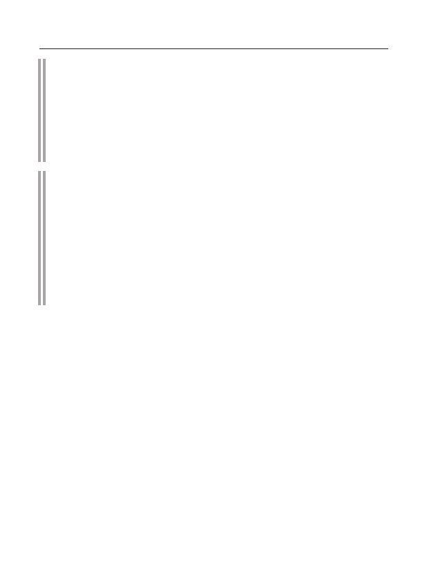
28
Livro branco sobre violações dos direitos humanos
e o Estado de direito na Ucrânia
Carta das Nações Unidas
Artigo 2º, parágrafo 7º.
Esta Constituição não confere de forma alguma à Organização
Direito das Nações Unidas de intervir em questões essencialmente
que se enquadram na jurisdição doméstica de qualquer estado, e não exigem
dos Membros das Nações Unidas para apresentar tais casos
para permissão sob esta Carta; no entanto, este princípio não é
afeta a aplicação das medidas de execução previstas no Capítulo VII.
Declaração sobre Princípios de Direito Internacional,
sobre as relações amistosas
e cooperação entre estados
(24 de outubro de 1970)
Nenhum estado deve organizar, incitar, financiar
instigar, incitar ou tolerar atos subversivos, terroristas ou
atividade armada visando a derrubada violenta
construir outro Estado, bem como contribuir para isso, bem como
intervir em conflitos internos em outro estado.

Interferência nos assuntos internos de um estado soberano
29
26 de novembro de 2013
Orador do Seimas da Lituânia L. Grauzhinene, acompanhado por
dois vice-presidentes do Seimas, sem convite das autoridades oficiais da Ucrânia
, chegaram a Kiev e falaram em comícios da oposição na
Praça Europeia e Maidan Nezalezhnosti, durante os quais ela pediu aos participantes
que não desistissem das exigências ao governo para assinar um acordo de associação
com a UE.
1º de dezembro de 2013
Deputado do Seimas da Polônia J. Kaczynski, passando o enviado
O presidente do Parlamento Europeu, M. Schulz (Alemanha), disse
do palco do Maidan que a União Europeia não tem dúvidas sobre a iminente adesão
da Ucrânia à UE.
4 de dezembro de 2013
O ministro das Relações Exteriores alemão, G. Westerwelle, chegou a Kiev. Ele
visitou o acampamento dos manifestantes em Maidan e reuniu-se com os líderes da oposição
V. Klitschko (partido de Udar) e A. Yatsenyuk (Batkivshchyna VO).
7 de dezembro de 2013
Membro do Parlamento Europeu J. Sariush-Wolsky
(Polônia) declarou da tribuna do Maidan que a Rússia supostamente interfere na “
escolha europeia” do povo ucraniano. Ao mesmo tempo, o eurodeputado exortou o governo da
Ucrânia a parar com as “provocações”, libertar os detidos das prisões
e também parar de usar a força contra os manifestantes.
Da cena Euromaidan, E. Brock (Alemanha), presidente da Comissão de
Relações Exteriores do Parlamento Europeu, exigiu que as autoridades soberanas da
Ucrânia mudassem de ideia e libertassem Y. Tymoshenko da prisão.
6, 7, 11 de dezembro de 2013, 6 a 8 de fevereiro, 3 a 5 de março de 2014
na Maidan
A vice-secretária de Estado dos EUA, Victoria Nuland, visitou,
sempre dando instruções a figuras da oposição, fazendo
gestos públicos como distribuir biscoitos aos combatentes de Berkut. Essas medidas
pretendiam demonstrar o apoio de Washington
à ilegalidade que acontece na Ucrânia.
De acordo com numerosos testemunhos, V. Nuland participou da formação
do atual "governo" da Ucrânia. Isso, em particular, é
eloquentemente evidenciado pela gravação de sua
conversa telefônica que apareceu na Internet no início de fevereiro de 2014 com o embaixador dos EUA em Kiev J. Pyatt.
De acordo com alguns meios de comunicação e analistas independentes, o Euromindan
foi encenado pelo Departamento de Estado dos EUA por meio de
ONGs e fundações privadas controladas por ele. O site do Ron Paul Institute for Peace and Prosperity
(EUA) publicou um estudo do cientista político americano S. Wiseman,
que traz informações específicas sobre o assunto. Segundo Wisme,
Belaya_kniga_11_2013-03_2014-html.html

trinta
Livro branco sobre violações dos direitos humanos
e o Estado de direito na Ucrânia
Bem, o planejamento de eventos na Ucrânia vem acontecendo há muito tempo. Um grupo foi criado
de várias dezenas de organizações da oposição ucraniana que
recebeu fundos da Soros Foundation e Pact Inc, uma organização que trabalha para
Agência dos Estados Unidos para o Desenvolvimento Internacional. S. Wiseman dá uma série de
o fosso de como os protestos foram realizados contra o governo de V. Yanuko-
HIV usando tecnologias e desenvolvimentos de especialistas americanos
propaganda e comunicação de massa. Coordenadores-chave
Departamento de Estado dos EUA por organizar um golpe em Kiev
na publicação são chamados de Vice-Secretário de Estado para Assuntos Europeus e Eurasiáticos Vik-
Thorium Nuland e embaixador dos EUA em Kiev Geoffrey Pyatt.
O estudo de S. Weissman contém indicações de investimentos financeiros específicos
indicadores. Assim, é relatado que em agosto de 2013, J. Pyatt concedeu bolsas
no valor de cerca de 50 mil dólares para apoiar a oposição emergente
O canal ucraniano de TV na Internet Gromadske TV, cuja equipe, incluindo
editor-chefe de chá Roman Skrypin, recrutado entre as pessoas anteriormente
que trabalhou para a mídia financiada pelos americanos (Radio Liberty, etc.).
Cerca de 30 mil dólares sob o patrocínio de J. Pyatt este canal de TV deve
foi alocado pela Fundação Soros e cerca de 95 mil dólares - a Embaixada da Holanda
em Kiev.
O canal assim criado, como escreve um cientista político americano,
começou a transmitir um dia após o Presidente da Ucrânia V. Janu-
Kovich em 21 de novembro de 2013 suspendeu a assinatura do acordo de associação
com a UE até à conclusão da análise das suas consequências económicas.
10 de dezembro de 2013
Chefe da facção Aliança dos Liberais e Democratas
Camarada pela Europa” do Parlamento Europeu G. Verkhovstadt (Bélgica) declarou
durante uma conferência de imprensa em Estrasburgo que membros do seu grupo político
pretendo ficar permanentemente em Maidan Nezalezhnosti em Kiev por
realizando uma "manifestação pró-europeia".
15 de dezembro de 2013
dois senadores dos EUA - o democrata K. Murphy e o republicano
John McCain - fez um discurso no "Euromaidan" em Kiev. Ambos
Políticos americanos disseram que os Estados Unidos apoiam o desejo dos participantes
"Euromaidan" para se unir com a Europa.
25 de janeiro de 2014
Delegação do Seimas de Lee você, chefiada pelo vice-presidente P. Ausht -
Ravičius falou da tribuna do "Euromaidan" em Kiev.
26 de janeiro de 2014
Membro do Parlamento Europeu J. Sariush-Wolsky
(Polônia), em entrevista à Semana Ucraniana, disse: “O chefe de Estado
Belaya_kniga_11_2013-03_2014-html.html

Interferência nos assuntos internos de um estado soberano
31
Viktor Yanukovych perdeu sua legitimidade.” Anteriormente, durante seu discurso
no Maidan em 22 de fevereiro de 2014, ele também condenou o uso “ilegítimo” da
força pelo governo da Ucrânia.
29 de janeiro de 2014
em uma reunião com o líder do partido de oposição "Udar"
V. Klitschko no Opera Hotel
E. Brock (Alemanha), presidente da Comissão de Assuntos Externos do Parlamento Europeu, assumiu abertamente o lado da
oposição, pedindo ao presidente V. Yanukovych que cumpra suas exigências.
30 de janeiro de 2014
da fase de "Euromaidan" o presidente do Conselho Europeu
O Comité Económico e Social A. Maloss apelou abertamente à Ucrânia
para que se concentre na UE: “Viva a Ucrânia europeia!” No final
de seu discurso, ele repetiu a saudação da odiosa divisão da SS ucraniana "Galicia
": "Glória à Ucrânia!" A tradicional resposta à saudação veio da multidão
: “Glória aos heróis!”
1º de fevereiro de 2014
Presidente do Conselho Económico e Social Europeu
A. Maloss voltou ao Maidan novamente para demonstrar abertamente
apoio à oposição: “Estaremos sempre com você!”
21 de fevereiro de 2014
Na verdade, a União Europeia recusou-se a realizar
desempenhando o papel de garante da implementação do acordo entre o Presidente da Ucrânia
V. Yanukovych e os líderes da oposição ucraniana, concluído em 21 de fevereiro de
2014 por meio da mediação dos Ministros das Relações Exteriores da Alemanha, Polônia
e França. Assim, a UE apoiou e aceitou a ascensão ilegítima
da oposição em Kiev e contribuiu diretamente para a violação da
ordem constitucional na Ucrânia.
22 de fevereiro de 2014
quase imediatamente após o golpe de estado
em Kiev, os Estados Unidos declararam a destituição do presidente legalmente eleito da Ucrânia um
"fato consumado" e reconheceram a "legitimidade" das autoproclamadas autoridades
chefiadas por A. Turchinov e A. Yatsenyuk. Para mostrar seu
apoio, em 4 de março de 2014, o secretário de Estado dos EUA,
John Kerry, veio a Kiev.
21 de março de 2014
à margem da reunião do Conselho Europeu
assinatura da parte política do Acordo de Associação UE-Ucrânia. Da Ucrânia, o documento foi assinado pelo primeiro- ministro A. Yatsenyuk
nomeado pela Verkhovna Rada da Ucrânia .
Assim, a União Européia reconheceu de jure o
governo ilegítimo da Ucrânia operando em Kiev e confirmou oficialmente
sua disponibilidade para trabalhar com ele, contornando os legalmente eleitos e permanecendo
Belaya_kniga_11_2013-03_2014-html.html

32
Livro branco sobre violações dos direitos humanos
e o Estado de direito na Ucrânia
de acordo com a Constituição da Ucrânia, o chefe de estado oficial
V. Yanukovych.
30 de março de 2014
moradores de Kiev relataram que o prédio de escritórios no centro
Na capital, onde está localizada uma das sedes do Setor Direito,
circulam regularmente carros com placas diplomáticas, além de
serem descarregadas malas maciças e objetos cobertos.
Belaya_kniga_11_2013-03_2014-html.html

Armamento, equipamentos e táticas dos participantes do Euromaidan.
Evidências de violência intencional e provocações
33
Armamento, equipamentos e táticas
participantes do Euromaidan.
Evidência de intencional
cometer violência e provocação
chamado pacífico
manifestantes
Belaya_kniga_11_2013-03_2014-html.html

34
Livro branco sobre violações dos direitos humanos
e o Estado de direito na Ucrânia
Convenção para a Proteção dos Direitos Humanos
e liberdades fundamentais
(Roma, 4 de novembro de 1950)
Artigo 2
O direito de cada pessoa à vida é protegido por lei. Nenhum
pode ser deliberadamente privado da vida, exceto em execução de morte
uma sentença proferida por um tribunal por cometer um crime contra
que a lei prevê tal punição.
A privação da vida não será considerada uma violação deste artigo,
quando é o resultado de uma aplicação absolutamente necessária
force ... para proteger qualquer pessoa da violência ilegal.
Artigo 3
Ninguém será submetido a tortura ou desumano
ou tratamento ou punição degradante.
Belaya_kniga_11_2013-03_2014-html.html
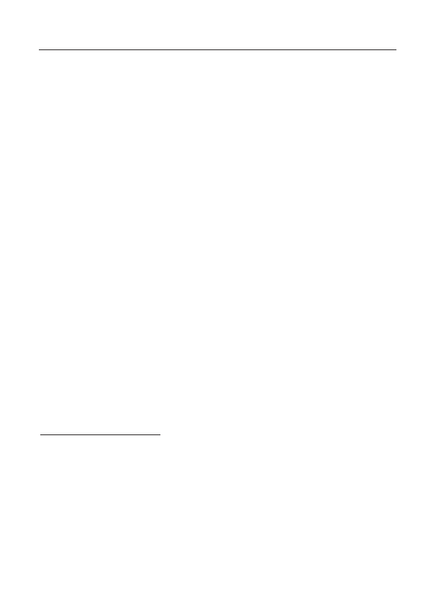
Armamento, equipamentos e táticas dos participantes do Euromaidan.
Evidências de violência intencional e provocações
35
Recebido no âmbito do projeto "Investigação Pública de
Violações de Direitos Humanos na Ucrânia", implementado pela ONG "Fundação para o Estudo da
Democracia"
1
, a evidência permite identificar claramente a presença
entre os participantes do Euromaidan há um grande e permanente grupo
de militantes militantes com vários milhares de pessoas, que
organizou ataques, bombardeios, espancamentos e assassinatos de
policiais, dissidentes (participantes de comícios com uma
posição política que não coincide com a o Maidan), apreensões de
edifícios públicos, etc.
Este grupo caracterizava-se por um elevado nível de equipamento com armas de fogo
e aço frio, vários equipamentos especiais (granadas, gás ,
etc.)
,
máscaras, respiradores, máscaras de gás, etc.), posse de
métodos táticos específicos de ações em grupo, trabalho em turnos com organização de
descanso para idosos e aproximação de reservas frescas, organização de
produção em pequena escala de artefatos explosivos improvisados e a existência de um
sistema de formação para outros activistas.
Testemunhas também observam o alto nível
de habilidade dos participantes nas ações de protesto para usar substâncias venenosas de
efeito irritante, incluindo vários gases de origem desconhecida.
2
, a partir de
que não foram salvos por respiradores regulares, que foram equipados com
agências de aplicação da lei, bem como fumaça de pneus inflamados e
bombas de fumaça
3
.
Segundo testemunhas, era este grupo que era a única
força permanentemente presente e mais ativa em Euromaidan
. Ao mesmo tempo, as testemunhas notam um alto nível tanto psicológico,
1
DENTRO
estrutura
projeto
a partir de
21
novembro
2013
G
.
em progresso
pesquisa
testemunhas
E
monitoramento
violações
certo
humano
no
Ucrânia
.
De
doença
no
vinte
Marta
entrevistado
mais
120
testemunhas
,
Incluindo
cinquenta
participantes
E
simpatizantes
"
euromaidan
", trinta
funcionários
milícia
E
outras
aplicação da lei
-
telny
corpos
Ucrânia
,
mas
Além disso
políticos
E
povo
deputados
Ucrânia
,
jornalistas
,
cientistas políticos
E
representantes
ONGs
.
Enquete
simpatizantes
"
euromaidan
»
foi detido
predominantemente
-
significativamente
no
ele mesmo
Maidan
E
dentro
capturado
edifícios
dentro
período
a partir de
21
mas eu
brea
2013
G
.
em
22
fevereiro
-
ralya
2014
G
.
2
Inteira
fila
funcionários
aplicação da lei
corpos
recebido
envenenamento
a partir de
gases
desconhecido
-
pé
origem
E
eram
forçado
passar
tratamento
dentro
hospital
.
3
Membros
"
euromaidan
»
no
Alto
nível
determinado
direção
vento
,
maioria
efeito
-
tivamente
colocada
fontes
gás
E
fumaça
para
conquistas
efeito
máximo
derrota
.

36
Livro branco sobre violações dos direitos humanos
e o Estado de direito na Ucrânia
e apoio organizacional para este grupo de outros participantes
do Euromaidan: justificativa de suas ações violentas e ilegais
, participação na fabricação de coquetéis molotov e artefatos
explosivos improvisados, desmantelamento de praças e calçadas para pavimentação, entrega
de pedras para uso contra a polícia , participação em ações provocativas
, queima de pneus, acolhimento de militantes militantes na
massa geral de manifestantes de órgãos de segurança pública, participação na construção de
barricadas etc.
Todas as testemunhas entrevistadas prestaram atenção ao bom equipamento
e preparação dos militantes. Ao mesmo tempo, nota-se que, logo no início dos
eventos, foram utilizados dispositivos de proteção caseiros -
equipamentos esportivos, construção, capacetes de bicicleta, escudos para braços e pernas.
Testemunhas apontam para os traços característicos das
armas caseiras dos militantes - bastões, porretes, machados, que foram modernizados
para aumentar o efeito danoso ao soldar
pontas de ferro, pedaços de serra circular sobre eles, aumentar os cabos dos machados domésticos
etc. Armas traumáticas,
rifles de ar com mira óptica, lançadores de foguetes convertidos, etc. foram amplamente utilizados.
Em um nível bastante alto,
foi organizada a produção de “coquetéis molotov”, aos quais foram adicionados componentes químicos especiais,
aproximando suas propriedades prejudiciais do napalm.
Após o início da fase ativa das operações, os militantes adquiriram elementos do
exército padrão ou equipamentos especiais e equipamentos de
proteção individual (armaduras, capacetes, capacetes).
Funcionários da unidade de polícia especial de Berkut
declaram a alta qualidade dos equipamentos e equipamentos dos militantes: “Quando alcançamos
um, ele estava melhor equipado do que nós: um escudo do exército de 16 quilos, protetores de braço
, placas de ferro da clavícula para a mão. As pernas
estão fechadas, o capacete é americano grosso, não temos, esse capacete até
te salvará de uma bala.”
Um recruta das tropas internas do Ministério de Assuntos Internos da Ucrânia, que recebeu um
ferimento de bala na perna, observa: “É claro que eles estavam preparados
. Os uniformes deles eram melhores que os nossos. Armadura corporal. Eles tinham capacetes
, como forças especiais. Muito caro."
Outro funcionário da unidade especial de polícia de Berkut
testemunha: “Os capatazes e centuriões têm uniformes muito bons, estão
bem armados. Cada fone de ouvido, eles enviaram outros contra
Belaya_kniga_11_2013-03_2014-html.html

Armamento, equipamentos e táticas dos participantes do Euromaidan.
Evidências de violência intencional e provocações
37
NÓS. Quando eles estavam atirando em nós, os escudos viraram como se estivessem atirando em nós com zhakans
, como se fossem uma caça de chifres grandes, então um pedaço
de cinco copeques de tamanho foi arrancado do escudo de um camarada. Nas primeiras filas, você podia vê-los de uniforme – havia
militantes em equipamentos militares da OTAN, joelheiras, cotoveleiras e
capacetes. Suas unidades trabalhavam na linha de frente (aqueles que jogam
coquetéis molotov). Aconteceu, grosso modo, que cem trabalharam
ativamente por uma hora e meia a duas horas, então outro grupo, fresco, surgiu. Eles tinham
várias ondas dessas pessoas com bons equipamentos, uma
certa atitude psicológica, muito agressiva.”
Timur, oficial da unidade especial de polícia de Berkut
, que foi ferido na mão, observa: “Os médicos
encontraram cartuchos da OTAN no corpo dos feridos. Agora temos um cara sobrando, ele parece ter
5,56 mm - um cartucho da OTAN foi removido de seu pulmão. E eles atiraram em nós de forma muito interessante
. Para evitar que os repórteres vissem que estavam atirando, atiraram do quadril.
Ou seja, eles cobriram suas armas com uma jaqueta e, quando fugiram, dispararam do quadril.
Portanto, houve muitas lesões, durante o dia tudo aconteceu, na hora do almoço.
Havia muitas feridas nas pernas .”
Ivan, membro da unidade especial de polícia de Berkut,
chamou a atenção para o uso de veículos
aéreos não tripulados no interesse dos rebeldes: “Vi drones duas vezes. O controle sobre eles
era completamente do lado do Maidan. Não sei como os cidadãos comuns conseguem
UAVs profissionais.”
Alexander, um ferido da
unidade especial de polícia de Berkut, também destaca a qualidade do equipamento dos
militantes, especialmente representantes do Setor Direita: “
O equipamento deles era de nível profissional. Tudo foi criado. Coletes à prova de balas,
escudos blindados, equipamentos de proteção para braços e pernas. Eles tinham tudo. Havia tais
destacamentos, como eu o entendo, o “Setor Direito”, que estava totalmente equipado
e armado. Eles tinham equipamentos do exército, coletes à prova de balas, alguns
tinham “areia”, como os americanos. Não temos armaduras assim. Existe a 4ª,
5ª classe de proteção.
Viktor, membro da unidade especial de polícia de Berkut
, diz: “Tudo foi soberbamente encenado lá. Não havia confusão
, nenhum movimento arbitrário ali. Em 1º de dezembro de 2013,
tudo ficou claro em Bankovskaya. Os ativistas jogaram pedras e correntes nos soldados. Houve
também uma parte significativa dos manifestantes pacíficos que
não estavam ativos. Quase todos os ativistas - eles resolveram perfeitamente isso
Belaya_kniga_11_2013-03_2014-html.html
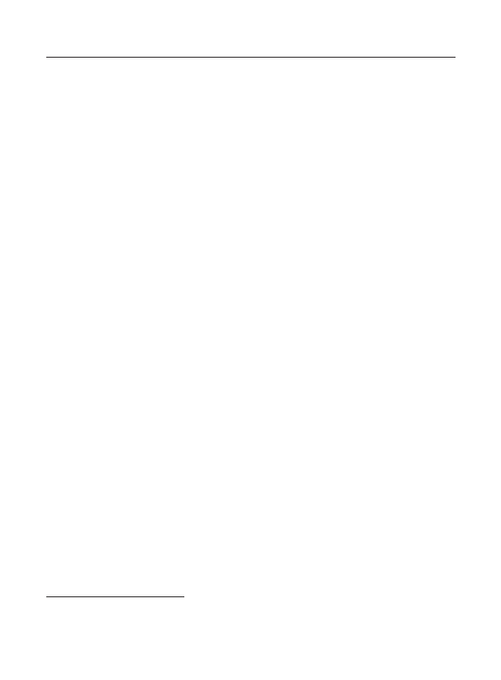
38
Livro branco sobre violações dos direitos humanos
e o Estado de direito na Ucrânia
mas - no momento da ofensiva, quando o Berkut avançou, eles foram imediatamente perdidos
na multidão.
Andrey, oficial da unidade especial de polícia de Berkut
, ferido por arma de fogo, aponta para a coordenação das ações dos
militantes: “Pelo que entendi, eles tinham idosos lá. Porque
ficou claro que algumas pessoas estavam andando e fazendo algum tipo de sinalização, coordenando.
Houve muitos casos assim. Pessoas com roupas vermelhas brilhantes, como
roupas de esqui, se destacaram. Percebi que eles ficavam a cada 200-300 m
em um padrão quadriculado. Ficou claro que eles estavam se tornando um "monólito"
1
, mas não
eles sabem como formar em 2-3 fileiras, somos nós que sabemos como ficar no pushback passivo
. Em geral, suas ações foram semelhantes à escola francesa de dispersão
de comícios. Uma tática semelhante."
Timur, membro da unidade especial de polícia de Berkut
, que sofreu uma lesão na mão
2
, nota a coerência das ações dos militantes:
“Eles agiram em harmonia. Há alguns oficiais, líderes
do grupo. Porque você pode ver quando as pessoas são comuns - elas correm aleatoriamente.
Eles não pensam. E existem grupos separados que constroem "monólitos"
com escudos que se movem como parte de um grupo, como uma equipe. Se eles vêem
perigo, eles recuam. Pessoas preparadas, não preparadas por um mês, não dois. Disseram
-me que eles estavam se preparando há quase dois anos. Em lugares diferentes. O que
você pode ver imediatamente é que as pessoas estavam preparadas, cem por cento. Não há nem o que
dizer."
Ivan, oficial da unidade especial de polícia de Berkut
: “Eles foram treinados desde o início, mas não tinham habilidades
para conduzir a batalha real. A experiência do confronto conosco. Mas à medida que os
eventos se desenrolavam, pessoas mais preparadas surgiram.
Aptidão visível . Inicialmente eram cerca de uma centena de militantes, depois eles
se dividiram em grupos menores, 15 pessoas cada, e começaram
a nos provocar, primeiro de forma verbal, criticando os uniformes. Mas
então eles fizeram isso de forma mais inteligente, eles deixaram mulheres e jovens avançarem, e eles mesmos se cobriram
com eles.
Havia 10-15 pessoas assim, mulheres grávidas andavam por aí. E
a provocação consistiu no fato de que os militantes da esfera quebraram o fio de aço
1
A forma
construção
soldado
divisões
doméstico
tropas
E
especial
divisões
mi
-
polícia
Ucrânia
.
2
Quebrado
dedo
E
morto
tendão
19
Janeiro
2014
G
.
no
rua
.
Hrushevsky
.
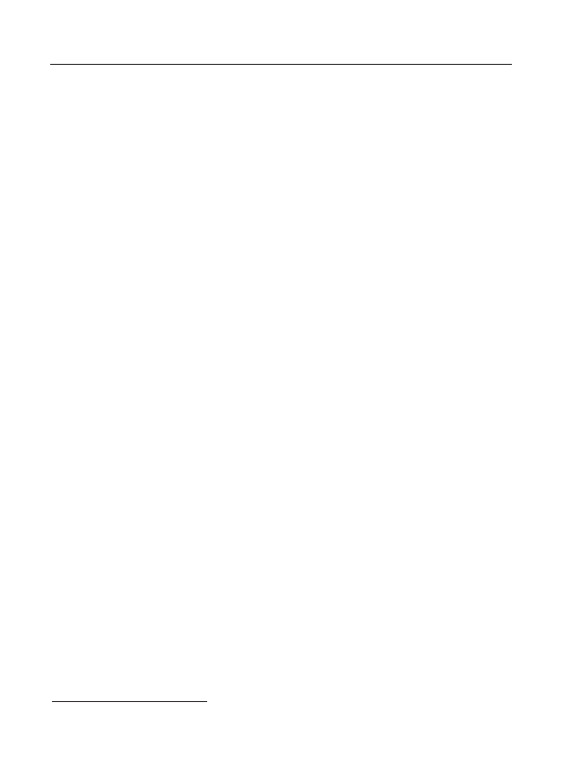
Armamento, equipamentos e táticas dos participantes do Euromaidan.
Evidências de violência intencional e provocações
39
loca 10–12 mm de espessura, cortada em pedaços de
15–20 cm. Era de vidro, a viseira do capacete. E eles imediatamente quebraram algum tipo de mistura,
por causa da qual nada era visível por 10 a 15 minutos. Depois disso, os militantes
imediatamente recuaram e mulheres com filhos apareceram em seu lugar e começaram a contar contos de
fadas que eram pacíficos”.
Outro funcionário da unidade especial de polícia de Berkut , que sofreu um ferimento na cabeça, também lembrou uma tática semelhante .
1
: "Eu tenho visto,
como as pessoas primeiro vêm, falam, cantam, depois mudam abruptamente,
e as pessoas de máscaras entram nas primeiras filas, que começam a usar
, por exemplo, gás em botijões grandes, especiais, que nem nós tínhamos
naquela época na unidade. Depois disso, aparecem grupos que estão
tentando romper o sistema, atacando policiais com paus. Assim
que avançamos, manifestantes pacíficos aparecem e imediatamente começam
a cantar o hino da Ucrânia, as músicas são diferentes”.
1
Ferida
cabeças
pedras de pavimentação
recebido
dezoito
Janeiro
2014
G
.
no
rua
.
Hrushevsky
.

40
Livro branco sobre violações dos direitos humanos
e o Estado de direito na Ucrânia
Belaya_kniga_11_2013-03_2014-html.html

Violações do direito à liberdade de opinião e crença.
Restrição da liberdade de imprensa e intimidação de dissidentes. Censura
41
Violações do direito à liberdade
opiniões, crenças,
incluindo o político
o direito de expressá-los.
Restrição da liberdade de imprensa
e intimidação de dissidentes.
Censura
Belaya_kniga_11_2013-03_2014-html.html
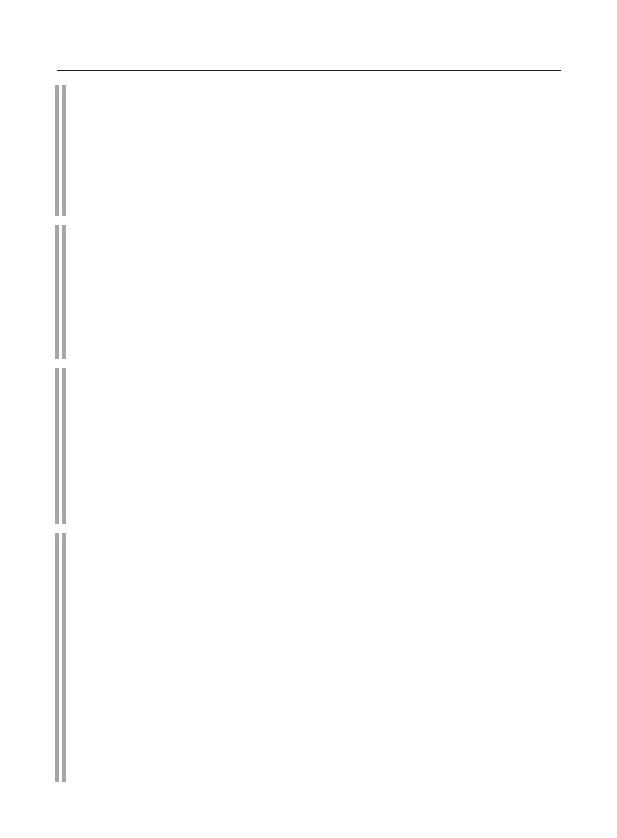
42
Livro branco sobre violações dos direitos humanos
e o Estado de direito na Ucrânia
Declaração Universal dos Direitos Humanos (10 de dezembro de 1948)
Artigo 19
Toda pessoa tem direito à liberdade de opinião e de
sua livre expressão; este direito inclui a liberdade, sem impedimentos
mas aderir às próprias convicções e liberdade de buscar, receber e distribuir
divulgar informações e ideias por qualquer meio e independentemente de
fronteiras estaduais.
Convenção para a Proteção dos Direitos Humanos
e liberdades fundamentais (Roma, 4 de novembro de 1950)
Artigo 10
Todos têm o direito de expressar livremente sua opinião. este
o direito inclui a liberdade de ter opinião própria e a liberdade de receber
e divulgar informações e ideias sem qualquer interferência de
lado das autoridades públicas e independentemente de fronteiras.
Pacto Internacional sobre o Direito Civil
e Direitos Políticos (16 de dezembro de 1966)
Artigo 19
Toda pessoa tem o direito de expressar livremente sua
suas opiniões; este direito inclui a liberdade de procurar, receber e transmitir
receber todo tipo de informação e ideias, independente do governo
fronteiras, oralmente, por escrito ou por meio impresso ou artístico
formas de expressão, ou em outras formas de sua escolha.
Convenção-Quadro
sobre a protecção das minorias nacionais
(Estrasburgo, 1 de fevereiro de 1995)
Artigo 9
As Partes comprometem-se a reconhecer que o direito de qualquer pessoa
pertencente a uma minoria nacional à liberdade de expressão
opinião inclui a liberdade de ter uma opinião
e liberdade para receber e trocar informações ou ideias na língua
minorias sem interferência do governo
e independentemente dos limites. Dentro de seus sistemas jurídicos, as Partes
assegurar que as pessoas pertencentes a minorias nacionais
fundos, não foram discriminados em termos de acesso a fundos
em formação.

Violações do direito à liberdade de opinião e crença.
Restrição da liberdade de imprensa e intimidação de dissidentes. Censura
43
27 de novembro de 2013
em Kiev, radicais de extrema-direita impediram
uma tentativa de ativistas de esquerda de irem ao Euromaidan com seus slogans,
arrancando cartazes de suas mãos e forçando-os a sair do comício.
28 de novembro de 2013
cerca de 30 ativistas do movimento do Setor Direita, por exemplo
lançando bombas de gás lacrimogêneo, atacaram uma manifestação pelos direitos das mulheres, realizada
em Kiev sob os lemas “Mulheres ucranianas recebem
salários europeus”, “A Europa recebe licença-maternidade”, etc.
uma menina ficou ferida.
4 de dezembro de 2013
em Kiev
dezenas de radicais de direita, partidários de
kov VO "Svoboda", atacou os ativistas
da Confederação dos Sindicatos Livres da Ucrânia (KSPU) conhecidos por suas visões de esquerda, os irmãos Levin,
que estavam distribuindo materiais de campanha nas ruas. Khreshchatyk. Os agressores chamaram
os ativistas sindicais de “mestiços”. As costelas de Anatoly Levin foram quebradas,
o nariz de Alexander Levin foi quebrado e sua bochecha aberta, Denis Levin sofreu
com o uso de gás lacrimogêneo. Além disso, a propriedade do
KSPU foi danificada - os atacantes cortaram a barraca com facas, quebraram o
equipamento de amplificação de som e roubaram um gerador elétrico.
22 de dezembro de 2013
ativistas da VO "Svoboda" com o uso de
Forças expulsaram o jornalista Viktor Gatsenko do prédio confiscado da
Administração Estatal da Cidade de Kiev, insultando-o obscenamente
e ameaçando-o com represálias por causa de suas opiniões políticas. Entre
os ativistas que empurram o jornalista para a rua e o ameaçam , foram identificados
Ruslan Andreiko, vice-chefe da filial de Kiev da VO “Svoboda”,
e Artem Ruban, um dos líderes da organização estudantil do partido.
18 de fevereiro de 2014
em Kiev
o jornalista do jornal "Vesti" Vyacheslav foi morto
Veremiy. Pessoas não identificadas usando máscaras com bastões e armas de fogo atacaram
um táxi em que ele e seu colega, o especialista em TI Alexei Lymarenko
, voltavam para casa. Eles e o motorista foram retirados do carro e severamente
espancados. O rosto de A. Lymarenko foi mutilado e V. Veremiy recebeu um ferimento de bala
no peito, do qual morreu logo.
De acordo com o Sindicato dos Jornalistas da Ucrânia, as violações dos direitos dos trabalhadores da mídia
durante os “eventos revolucionários” foram sem precedentes. Um jornalista
(V. Veremiy) foi morto, 167 trabalhadores da mídia ficaram feridos, dezenas foram
atacados de várias maneiras. A presença de um certificado editorial ou
a inscrição “imprensa” nas roupas não salvou os ataques e a destruição de
equipamentos profissionais.
Belaya_kniga_11_2013-03_2014-html.html

44
Livro branco sobre violações dos direitos humanos
e o Estado de direito na Ucrânia
20 de fevereiro de 2014
Doutor em Ciências, Professor do Departamento de Filosofia Eslava
da Universidade Nacional em homenagem a T.G. Shevchenko P. Prudyakov deu
uma entrevista a um dos canais de TV russos, após o que, por iniciativa do
reitor da universidade, ele foi solicitado a escrever imediatamente uma carta de
demissão da universidade. P. Prudyakov recusou. Pressão sem precedentes foi colocada sobre ele
, incluindo a ameaça de demissão sob o artigo “Grave
violação da disciplina trabalhista”. Os alunos de filologia foram incentivados a escrever uma
carta de acusação coletiva (os alunos se recusaram categoricamente
a fazê-lo). Várias vezes P. Prudyakov foi persuadido a deixar a universidade em
reuniões extraordinárias do departamento, embora o cientista seja um
dos maiores especialistas do mundo em seu campo.
27 de fevereiro de 2014
diretor da agência de notícias ucraniana
A GolosUA Oksana Vashchenko apelou às agências policiais atuantes
da Ucrânia com um pedido para impedir uma possível apreensão do escritório desta
agência e proteger seus jornalistas de invasões de
organizações extremistas. No entanto, no início de março de 2014, o escritório
da agência de notícias GolosUA foi apreendido por militantes do Setor Direita. A maior parte dos
funcionários foi obrigada a sair de férias por conta própria, uma parte menor
mudou-se para outra sala, mantendo todas as medidas de sigilo. Os ultranacionalistas
acusaram a direção da agência de "distorcer as informações
sobre a revolução popular".
28 de fevereiro de 2014
O apresentador de TV ucraniano V. Syumar foi nomeado vice
Vice-secretário do Conselho de Segurança e Defesa Nacional da Ucrânia.
Ela imediatamente começou suas atividades em uma nova capacidade, exercendo uma
pressão rude sobre os canais de televisão centrais estatais da Ucrânia - na verdade, ela
introduziu a censura. Em particular, a liderança da UTR (o segundo canal estatal que
transmite internacionalmente) foi informada em forma de ultimato que era necessário
mudar para o modo de “contra-propaganda”. V. Syumar enfatizou que
"o canal de TV não realiza contra-propaganda suficiente contra a Rússia". Como
resultado, a UTR foi reorientada para a transmissão em inglês com o envolvimento de
odiosos falantes anti-russos. Processos semelhantes são típicos para
os escritórios editoriais da Rádio Nacional da Ucrânia.
5 de março de 2014
no centro de Kiev no Maidan, os radicais agarraram e arrastaram
para a tenda em frente à Casa dos Sindicatos de
S. Rulev, um repórter da agência de notícias Navigator, que veio à praça para fazer uma reportagem
sobre um comício anti-guerra. O jornalista foi severamente espancado, seu
Belaya_kniga_11_2013-03_2014-html.html

Violações do direito à liberdade de opinião e crença.
Restrição da liberdade de imprensa e intimidação de dissidentes. Censura
45
documentos, telefone e câmera. O motivo da agressão foi que
S. Rulev já havia preparado relatórios sobre os funcionários da Berkut.
6 de março de 2014
em Donetsk, o Serviço de Segurança da Ucrânia foi preso
e enviado a Kiev, eleito durante a assembléia popular em 1º de março de 2014, como
governador popular da região de Donetsk, o ativista civil Pavel Gubarev,
que defendia o não reconhecimento do
novo governo de Kiev que veio como resultado de um golpe de Estado état e realizar um referendo sobre o futuro
destino do Donbass.
8 de março de 2014
Polícia de Dnepropetrovsk deteve 7 jornalistas russos
nalistas, motivando suas ações pelo fato de que os russos estavam supostamente interessados
apenas em "histórias provocativas separadas".
10 de março de 2014
Deputado do Povo da Verkhovna Rada e líder do Radical
Partido da Ucrânia O. Lyashko com um grupo de cúmplices derrotou Arsen
Klinchaev, deputado do Conselho Regional de Luhansk, chefe da organização pública Jovem Guarda
, que defende a federalização da Ucrânia e
dando à língua russa o status de língua estatal. O espancamento ocorreu
no escritório de V. Guslavsky, chefe do Ministério de Assuntos Internos da região de Luhansk, e com sua
total conivência. Ameaçado de represálias, A. Klinchaev foi proibido de participar
de ações pró-Rússia e de expressar sua posição sobre elas. No mesmo
dia, A. Klinchaev foi preso pelo serviço de segurança da Ucrânia
e enviado para Kiev.
11 de março de 2014
tomadas sob o controle das "novas autoridades" Nacional
O Conselho da Ucrânia sobre Radiodifusão e Televisão exigiu que
os provedores parassem de retransmitir
os canais de TV russos Vesti, Rossiya 24, Channel One, RTR Planet
e NTV Mir em suas redes até as 19:00.
11 de março de 2014
O tribunal de Kiev colocou em prisão domiciliar o ex-chefe
Administração Estatal Regional de Kharkov M. Dobkin. No final de fevereiro de
2014, M. Dobkin renunciou para participar das
eleições presidenciais de 25 de maio. Como governador da região, ele criticou duramente os partidários
do Euromaidan.
11 de março de 2014
, relatado por residentes de língua russa
Ucrânia, “em todas as cidades do país” os canais de TV russos foram desligados
. Anteriormente, reclamações semelhantes foram recebidas da cidade de Gorlovka, região de Donetsk,
onde o ISP Interset local desligou os
canais de TV NTV e RTR, e Kharkiv, onde o Canal Um, Rossiya e NTV foram desligados.
Belaya_kniga_11_2013-03_2014-html.html
46
Livro branco sobre violações dos direitos humanos
e o Estado de direito na Ucrânia
Ao mesmo tempo, como observam pesquisadores e sociólogos, até 90% da
transmissão de televisão foi ocupada por programas em russo.
13 de março de 2014
Tribunal de Kiev coloca prefeito de Kharkiv em prisão domiciliar
G. Kernes, que já havia expressado repetidamente seu desacordo com
os processos políticos que ocorrem na Ucrânia, incluindo aqueles relacionados
à tomada forçada do poder por partidários do Euromaidan.
13 de março de 2014
O serviço de segurança da Ucrânia detido e enviado
Governador Popular da região de Lugansk Alexander Kharitonov para Kiev. No site do chefe
do Partido Socialista Progressista da Ucrânia, a esposa de A.
Kharitonov enviou uma carta aberta sobre a violação de seus direitos civis e os direitos
de seu marido: segurança da Ucrânia e a tomada forçada do poder estatal) não correspondem à realidade e foram apresentadas com o objetivo de represália contra o marido por suas convicções políticas. Ameaças soaram no Maidan e distribuídas na mídia da Ucrânia: “Moskals a facas!”, “Glória à nação - morte aos inimigos!”, ele, como outros, percebido como uma ameaça à sua vida e segurança
nossa família. Portanto, e somente por isso, ele, como outros moradores de Luhansk, foi a uma
ação de protesto pacífica. Eu queria conhecer meu marido, vê-lo, dar
-lhe apoio moral de mim e dos meus filhos, mas me recusaram um
encontro.”
14 de março de 2014
o maior jornal sociopolítico da Ucrânia
nós - o semanário "2000" deixou de existir em papel
devido à forte pressão política e à política de censura do
"novo governo". Os editores não descartam uma interrupção completa do trabalho em conexão
com ameaças de apreensão do escritório em Kiev. O jornal publica há muitos anos
artigos críticos sobre os políticos que agora estão no poder. Imediatamente
após a mudança de poder no país, a maior gráfica de Kiev, Press of Ukraine
, anunciou uma revisão unilateral do contrato com os editores de 2000
. Os preços foram elevados artificialmente várias vezes acima do mercado
e negociados no contrato anterior.
15 de março de 2014
militantes da chamada autodefesa Maidan
eles guardavam o prédio do canal de TV ucraniano Inter e exigiam uma mudança em sua
liderança devido à política de informação do canal. Os
chefes do canal, jornalistas e apresentadores receberam ameaças (via SMS,
ligações, redes sociais), que não pararam mesmo após mudanças no editorial
Belaya_kniga_11_2013-03_2014-html.html

Violações do direito à liberdade de opinião e crença.
Restrição da liberdade de imprensa e intimidação de dissidentes. Censura
47
política. A pressão sobre a gestão do Inter aumentou especialmente após a prisão
no início de março de 2014 de seu principal acionista, D. Firtash.
17 de março de 2014
desconhecidos detiveram um dos líderes do
movimento de teste em Odessa, o líder da "Alternativa Popular" A. Davidchenko
. Pessoas não identificadas em uniformes pretos sem insígnia agarraram a
figura pública, arrastaram-no para dentro de um carro com números de trânsito
e o levaram em direção desconhecida. Os associados de A. Davydchenko acreditam que a
operação foi realizada por oficiais da SBU e que o líder da "Alternativa Popular" foi
levado para Kiev.
18 de março de 2014
um grupo de deputados da Verkhovna Rada da Ucrânia do VO "Svobo-
Sim”, encabeçado por I. Miroshnichenko e famoso ator B. Benyuk (
Artista do Povo da Ucrânia) chegou ao escritório do Primeiro Canal Nacional da Ucrânia
(NTKU) e forçou seu Diretor Geral A. Panteleymonov a escrever uma
carta de demissão. A. Panteleimonov, comentando mais tarde o incidente
no ar, disse que os deputados tiveram uma "conversa longa e irritante" com ele.
As imagens postadas na Internet mostram que os deputados bateram
no rosto e na cabeça de A. Panteleymonov. Ele foi acusado de
transmitir ao vivo o discurso do presidente da Rússia à
Assembleia Federal da Federação Russa sobre a Crimeia, que supostamente “não é patriótico
”. A. Panteleimonov foi chamado de "Moskalyuka" e foi constantemente lembrado
ele que o NTCU supostamente espalhou mentiras sobre os eventos no Maidan.
18 de março de 2014
funcionários da emissora regional de televisão foram submetidos a pressões
deniya preço Chernihiv. Várias dezenas de
ativistas locais do Setor Direita armados com granadas e armas brancas invadiram o prédio da
empresa de TV e rádio, bloquearam a maioria das instalações e exigiram
que o diretor-geral escrevesse uma carta de demissão. Há apenas uma razão - "um cúmplice
do antigo regime".
19 de março de 2014
um jornalista da publicação online Segodnya.ru foi sequestrado
Aleksey Khudyakov, que desde 28 de fevereiro de 2014, de acordo com
a atribuição editorial que lhe foi entregue, estava em Donetsk (durante a viagem
, preparou e publicou cinco artigos e notícias
nos quais expressou opiniões críticas sobre grupos radicais
pró-nazistas e “novas autoridades” em Kiev).
Uma van escura parou ao lado de A. Khudyakov, da qual
homens mascarados saltaram sem explicar suas ações e o empurraram para dentro do carro
. Depois disso, eles colocaram algemas nele, e um saco escuro sobre sua cabeça,
o revistaram e o levaram para a floresta. Um dos sequestradores se apresentou como colaborador
Belaya_kniga_11_2013-03_2014-html.html

48
Livro branco sobre violações dos direitos humanos
e o Estado de direito na Ucrânia
com SBU, mas se recusou a mostrar quaisquer documentos. Depois disso
, eles começaram a intimidar A. Khudyakov, incluindo ameaças diretas à sua vida
e à vida de seus parentes (obrigaram-no a listar seus nomes e sobrenomes
com números de telefone). Os sequestradores lhe disseram que ele “
estima mal a situação atual”. Sob ameaças, ele foi forçado a ler um
texto desconhecido em ucraniano em uma câmera de vídeo e também a assinar
documentos afirmando que estava pronto para trabalhar para o Serviço de Segurança da Ucrânia.
Caso o fato do sequestro fosse divulgado, os perpetradores ameaçaram
ele e seus familiares com represálias. Depois disso, cartões SIM ucranianos
para telefones, um cartão de memória para um telefone foram apreendidos dele, as fotos foram destruídas.
e vídeos e livro de endereços no telefone. O jornalista foi levado
a um posto de fronteira na fronteira com a Rússia e entregue aos guardas de fronteira para
deportação.
19 de março de 2014
em Vinnitsa, um grupo de membros de extrema direita do chamado
O Tribunal Popular exigiu rudemente que a médica chefe do
hospital clínico infantil regional, T. Antonets, renunciasse voluntariamente ao
cargo, pois não renunciou publicamente ao Partido das Regiões
e não condenou os "crimes do governo anterior". Os radicais diziam que, em caso de
desobediência, tratariam com o médico-chefe "de acordo com as leis da dura
época revolucionária".
19 de março de 2014
de facto nomeado governador em Kiev
S. Taruta da região de Donetsk afirmou que
unidades policiais adicionais das
regiões de Dnipropetrovsk e Kirovograd deveriam chegar a Donetsk para “acalmar os partidários da independência de Donbass”.
20 de março de 2014
Jornalistas de canais de TV russos detidos em Donetsk
"Rússia-1" A. Buzoladze, S. Eliseeva, S. Zavidov, M. Isakov. Os documentos foram confiscados dos russos
e levados para o posto de controle de Vasilyevka,
onde foram mantidos por várias horas sem explicação, após o que foram expulsos
do território da Ucrânia.
20 de março de 2014
em Odessa, representantes da chamada autodefesa
Maidan exigiu que o diretor-geral da televisão regional
, M. Aksenova, escrevesse uma carta de demissão, ameaçando com violência física
.
20 de março de 2014
Direcção do Serviço de Segurança da Ucrânia em Luhansk
região tomou uma série de medidas para liquidar a associação pública
“Luhansk Guard”, que defende a federalização da Ucrânia
Belaya_kniga_11_2013-03_2014-html.html

Violações do direito à liberdade de opinião e crença.
Restrição da liberdade de imprensa e intimidação de dissidentes. Censura
49
e dando à língua russa o status de língua estatal. Três
ativistas foram presos, buscas foram realizadas nos escritórios da organização e nos apartamentos de membros
da Guarda de Lugansk. Um dos líderes de sua ala juvenil, A. Pyaterikova,
publicou um apelo ao público nas redes sociais, no qual
informava que o SBU, juntamente com o deputado da Verkhovna Rada da Ucrânia, líder do
radical de ultra-direita partido, O. Lyashko, organizou uma caça aos membros
da Guarda de Luhansk, expondo a perseguição de ativistas e suas
famílias.
20 de março de 2014
em Odessa, ativistas do Euromaidan sitiaram a promotoria
e levantaram a voz e conversaram com o procurador da região. Às vezes
vinham ameaças contra ele. Sua principal demanda era “
resolver as coisas com dificuldade” e “agir” contra o campo e os líderes do
movimento público “Kulikovo Pole”, que defende dar à língua russa o
status de língua estatal e realizar uma reforma constitucional para
federalizar a Ucrânia.
22 de março de 2014
O Serviço de Segurança da Ucrânia deteve um dos líderes
a vala do movimento de protesto, o chefe da chamada milícia popular
de Donbass M. Chumachenko por suspeita de invasão da
integridade territorial da Ucrânia.
23 de março de 2014
Direcção do Serviço de Segurança da Ucrânia para a Transcarpatia
abriu processos criminais sobre o fato de “invasão da
integridade territorial e inviolabilidade da Ucrânia” e divulgação
de “recursos separatistas” na Internet. A base para essas ações
foi o relatório de um oficial da SBU que, durante
janeiro-fevereiro de 2014, pessoas desconhecidas publicaram mensagens na Internet contendo
um apelo ao Presidente da Federação Russa V.V. Putin em nome dos
Rusyns da Transcarpathia sobre o reconhecimento da República de "Podkarpatskaya Rus".
26 de março de 2014
a pedido do Conselho de Segurança Nacional e
rony da Ucrânia (para “garantir a segurança da informação do país
”), o Tribunal Distrital de Kiev decidiu suspender a transmissão de
cinco canais de TV russos na Ucrânia — Vesti, Rossiya-24,
Channel One, RTR-Planeta e NTV- Mir.
26 de março de 2014
em Dnepropetrovsk, Kharkov e Donetsk por adeptos
O “Setor Direito” foi espancado por cidadãos que usavam fitas de São Jorge no peito
(sinal simbólico dedicado à celebração do Dia da Vitória na Grande
Guerra Patriótica).
Belaya_kniga_11_2013-03_2014-html.html

cinquenta
Livro branco sobre violações dos direitos humanos
e o Estado de direito na Ucrânia
26 de março de 2014
na região de Kirovograd por representantes do
"Rada do Povo" e membros do VO "Svoboda" atacaram o
médico-chefe do Hospital Distrital Central de Ulyanovsk A. Tkalenko, que foi
tentado a ser espancado em seu escritório. Toda a “culpa” do médico
eram suas convicções políticas (ele era membro do Partido das Regiões e foi
nomeado pelo governo anterior).
30 de março de 2014
em Luhansk, militantes do Euromaidan atacaram uma tenda
ny cidade de ativistas da "Guarda de Lugansk". Os opositores das "novas
autoridades de Kiev" foram espancados com bastões, suas tendas foram cortadas e quebradas. Várias
vítimas entre os ativistas do acampamento foram levadas
ao hospital com ferimentos significativos na cabeça e nos membros. É indicativo
que as patrulhas da milícia localizadas não muito longe do local
preferiram não intervir.
Belaya_kniga_11_2013-03_2014-html.html

Discriminação étnica e linguística, xenofobia
e extremismo racial. Incitação ao ódio racial
51
Discriminação
por etnia e idioma,
xenofobia e extremismo racial.
Incitação ao ódio racial
Belaya_kniga_11_2013-03_2014-html.html
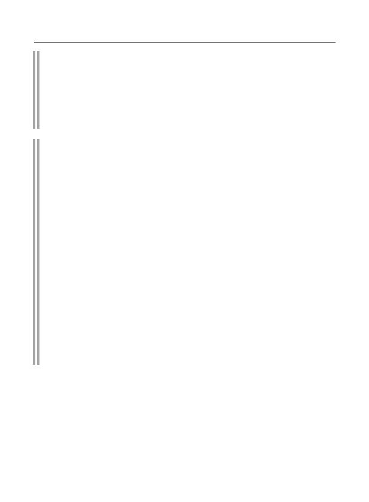
52
Livro branco sobre violações dos direitos humanos
e o Estado de direito na Ucrânia
pacto internacional
sobre Direitos Civis e Políticos (16 de dezembro de 1966)
Artigo 20
Qualquer defesa de uma nacionalidade, raça ou
ódio religioso constituindo incitação
discriminação, hostilidade ou violência devem ser proibidas por lei.
nome
Convenção-Quadro do Conselho da Europa
sobre a Proteção das Minorias Nacionais (1 de fevereiro de 1995)
Artigo 4
As Partes comprometem-se a garantir a todas as pessoas pertencentes
pertencentes a minorias nacionais, o direito à igualdade perante
direito e a igual proteção perante a lei. A este respeito, qualquer
discriminação por pertencer a uma minoria nacional
Shinstvu, é proibido.
Artigo 6
As Partes encorajarão um espírito de tolerância e diálogo entre
passeios, bem como tomar medidas eficazes para promover a
respeito mútuo, compreensão e cooperação entre todos
pessoas residentes em seu território, independentemente de sua etnia
filiação étnica, cultural, linguística ou religiosa,
especialmente nas áreas de educação, cultura e mídia.
Artigo 10
As partes comprometem-se a reconhecer qualquer pessoa pertencente
pertencente a uma minoria nacional, o direito de livre e sem impedimentos
usar a língua de sua minoria, oralmente e por escrito,
na vida privada e publicamente. Cada Estado Parte se compromete a não
incentivar, defender ou apoiar a discriminação racial,
realizado por qualquer pessoa ou organização.
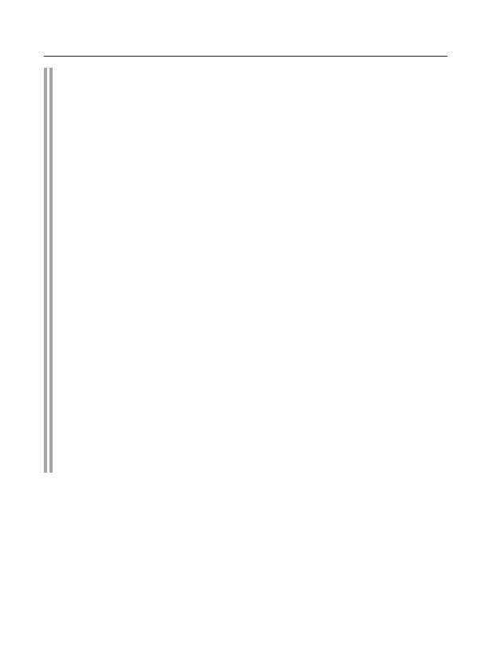
Discriminação étnica e linguística, xenofobia
e extremismo racial. Incitação ao ódio racial
53
convenção Internacional
sobre a eliminação de todas as formas de discriminação racial
(21 de dezembro de 1965)
Artigo 4
Os Estados participantes condenam toda propaganda e toda
organizações baseadas nas ideias ou teorias de superioridade de um
raça ou grupo de pessoas de uma determinada cor de pele ou origem étnica
origens ou tentativas de justificar ou encorajar
ódio e discriminação sob qualquer forma, e comprometem-se
tomar medidas imediatas e positivas para erradicar
qualquer incitamento a tal discriminação ou atos de discriminação
crime , e
(a) torná-lo um crime punível por lei para qualquer
expressão de ideias baseadas em superioridade racial ou ódio, qualquer
incitação à discriminação racial, bem como todos os atos de violência
ou incitamento a tais atos contra qualquer raça
ou grupos de pessoas de cor de pele ou origem étnica diferente,
bem como fornecer qualquer assistência para a realização de atividades racistas
actividade, incluindo o seu financiamento;
b) banir e banir organizações, e
organizada e qualquer outra atividade de propaganda que
que encorajam e incitam a discriminação racial e reconhecem
participar em tais organizações ou em tais atividades criminosas
comer punido por lei;
c) não permitir que autoridades públicas nacionais ou locais
autoridades ou instituições públicas para incentivar a discriminação racial
nação ou incitá-la.

54
Livro branco sobre violações dos direitos humanos
e o Estado de direito na Ucrânia
23 de novembro de 2013
poetisa Diana Kam-
Luke, conhecido por ser condenado em 2008 por ser cúmplice do
assassinato por motivos raciais de um nigeriano em 2006.
Ela leu seus poemas da coleção Voice of Blood, incluindo
conteúdo racista e antissemita. A poetisa amadora
terminou seu discurso com uma exclamação: “Que você siga em frente e não caia nas súplicas dos
judeus! O sangue ucraniano de um homem branco corre em nossas veias!”
7 de dezembro de 2013
folhetos apareceram no metrô de Kiev em nome da VO “Svo-
boda”, que continha apelos para realizar represálias contra os judeus, para
expulsá-los “das ruas de nosso país”.
22 de dezembro de 2013
o monumento às vítimas do Holocausto em Nicholas foi profanado
v.
Uma cruz "satânica" invertida foi pintada na placa em spray preto indelével .
Na noite de
1º de janeiro de 2014
no palco de "Euromaidan" foi tocado um aniversário
presépio, durante o qual Bohdan
Benyuk, deputado popular do VO "Svoboda", retratou um "judeu". Seu monólogo foi uma atualização dos tradicionais
estereótipos anti-semitas nas realidades ucranianas modernas: “Ontem
eu negociei um pouco, hoje me tornei deputado”, “Eu empresto um pouco para as pessoas, tenho uma
porcentagem disso”, “Oriente e Ocidente são todos meus, nosso povo está em toda parte” etc.
1º de janeiro de 2014
no centro de Kiev houve uma manifestação em homenagem ao 105º aniversário da
desde o nascimento de Stepan Bandera, o ideólogo e fundador do
ultranacionalismo ucraniano, capanga dos nazistas alemães. Cerca de 10.000 pessoas participaram da procissão de tochas
, que foi realizada pelo VO “Svoboda” nesta ocasião .
11 de janeiro de 2014
em Kiev, extremistas atacaram um jovem de 26 anos
ele um professor da sinagoga de Kiev Rosenberg, um cidadão israelense
G. Verkhtaymer.
17 de janeiro de 2014
depois de visitar a sinagoga, um homem de 33 anos foi severamente espancado
paroquiano, estudante de uma yeshiva (instituição de ensino religioso),
cidadão russo Dov-Ber Glikman. Ele foi espancado com as mãos e os pés e,
aparentemente, lâminas foram cravadas na ponta de suas botas, deixando cortes profundos.
20 de janeiro de 2014
vândalos profanaram o memorial "Mãe Enlutada",
colocado no Parque Pushkarevsky em Poltava (no local da execução de 15 mil
judeus durante a Grande Guerra Patriótica). Os antissemitas pintaram
um símbolo neonazista e picharam o monumento – “Morte aos judeus”, e também riscaram
a inscrição “Memória de você em nossos corações”.
Belaya_kniga_11_2013-03_2014-html.html

Discriminação étnica e linguística, xenofobia
e extremismo racial. Incitação ao ódio racial
55
2 de fevereiro de 2014
na cidade de Alexandria, região de Kirovograd, desconhecida
profanou um monumento aos judeus - vítimas do Holocausto (no local da execução
de 2572 judeus). Os vândalos desenharam uma suástica com tinta preta e
escreveram: “Morte aos judeus” e “Zieg heil” (dado como no original).
22 de fevereiro de 2014
membro da facção "Batkivshchyna" V. Yavorivsky apresentou a Ver-
o Conselho de Ministros da Ucrânia, um projeto de lei que propõe abolir a regra sobre a responsabilidade
de expressar a própria opinião sobre os crimes do fascismo.
23 de fevereiro de 2014
A Verkhovna Rada da Ucrânia declarada inválida
a lei “Sobre os fundamentos da política linguística estatal” de 3 de julho de 2012,
que deu o status de idioma regional ao idioma russo e outros idiomas das
minorias nacionais. "E sobre. O presidente da Ucrânia A. Turchynov disse que não
iria assinar esta decisão da Rada, no entanto, o projeto de lei aprovado pelo Parlamento
ainda está “sobre a mesa”.
24 de fevereiro de 2014
na cidade de Brody, região de Lviv, um monumento ao russo
ao comandante M.I. Kutuzov.
24 de fevereiro de 2014
em Zaporozhye, quatro extremistas tentaram
incêndio da sinagoga.
5 de março de 2014
coordenador do "Setor Direito" na Ucrânia Ocidental Alek-
sandr Muzychko (Sashko Bily) gravou e distribuiu na Internet um
apelo em vídeo no qual pedia “limpeza da Ucrânia e da Crimeia” dos
cidadãos de língua russa.
8 de março de 2014
deputado nomeado pelas "novas autoridades" da Ucrânia para
o post do governador da região de Dnipropetrovsk, B. Filatov, em sua página
na rede social Facebook, explicou como lidar com participantes
de protestos insatisfeitos com o novo governo de Kiev: “Você precisa dar à escória quaisquer
promessas, garantias e fazer qualquer concessões. Vamos pendurá-los mais tarde."
8 de março de 2014
na cidade de Chigiri, região de Cherkasy, pessoas não identificadas incendiaram
com a ajuda de "coquetéis molotov" um memorial judaico instalado
em 2012 perto do cemitério, onde
foram encontrados os túmulos dos anciãos hassídicos.
Na noite de
11 de março de 2014
extremistas incendiaram o monumento húngaro,
mudou-se para a passagem de Veretsky em homenagem ao 1100º aniversário da passagem dos húngaros pelos
Cárpatos. Este episódio tornou-se um ato anti-húngaro aberto no contexto de toda uma
série de eventos que afetam direta ou indiretamente os interesses da
minoria húngara na Transcarpácia. Representantes do partido VO “Svoboda” exigiram
Belaya_kniga_11_2013-03_2014-html.html

56
Livro branco sobre violações dos direitos humanos
e o Estado de direito na Ucrânia
se o Gabinete do Procurador-Geral do país deve proibir o Partido Democrático
dos Húngaros da Ucrânia (DPVU), chefiado pelo único deputado, o
húngaro transcarpático I. Gaydosh. Em 2011, VO "Svoboda" reivindicou a responsabilidade
por uma ação semelhante para profanar o memorial húngaro na passagem de Veretsky
.
A PARTIR DE
11 de março de 2014
comissão especial temporária começou a trabalhar em Kiev
sobre a preparação do projeto de lei "Sobre o desenvolvimento e uso de línguas na Ucrânia".
O vice-presidente da Verkhovna Rada da Ucrânia Ruslan
Koshulinsky (VO “Svoboda”) tornou-se o chefe da comissão. Entre os principais membros estão Volodymyr Yavorivsky
(VO “Batkivshchyna”), Maria Matios (o partido “Udar”) e Irina Farion
(VO “Svoboda”). Deputados do Partido das Regiões são sistematicamente
excluídos desta comissão.
I. Farion apresentou um projeto de lei que prevê a responsabilidade criminal
(7 anos) por falar
russo em instituições estatais e locais públicos na Ucrânia.
13 de março de 2014
O rabino G. Cohen foi atacado por neonazistas em Kiev.
Ele foi espancado e esfaqueado duas vezes.
14 de março de 2014
um grupo de neonazistas rastreados nas ruas da capital ucraniana
um casal hassídico (cidadãos de Israel e dos Estados Unidos) a caminho
da sinagoga. No último momento, o perseguido conseguiu pular em um táxi,
no qual as pedras voaram.
15 de março de 2014
guardas de fronteira da Ucrânia na seção da Transnístria do
A fronteira Dava-Ucrânia fechou a entrada e saída de homens da Rússia.
16 de março de 2014
em Dnepropetrovsk cerca de 30 radicais ucranianos
Um grupo de adolescentes locais foi severamente espancado pelos finalistas por não
responderem à sua saudação “Glória à Ucrânia!”. Relatórios de tais
patrulhas Bandera em Dnepropetrovsk tornaram-se regulares. A cidade acabou sendo inundada
por bandidos armados que patrulham as ruas e dirigem
as saudações de Bandera “Glória à Ucrânia!” aos transeuntes. Se a resposta estiver
errada, ou a pessoa ficar em silêncio, então ela é espancada. Muitas vezes os crimes
acontecem bem diante dos olhos da polícia, mas os “policiais” tentam
não interferir nisso.
17 de março de 2014
Diretor do Departamento de Política de Informação do Ministério das Relações Exteriores
Ucrânia E. Perebiinos em um briefing oficial disse que os russos
não são o povo indígena da Ucrânia e, portanto, não têm direito à
autodeterminação em território ucraniano. Ele também afirmou que na Ucrânia
Belaya_kniga_11_2013-03_2014-html.html

Discriminação étnica e linguística, xenofobia
e extremismo racial. Incitação ao ódio racial
57
existem apenas quatro povos indígenas - ucranianos, tártaros da Crimeia,
caraítas e krymchaks.
17 de março de 2014
Dmitry N. de Kharkov foi testemunha ocular de como o
Onal-radicais espancaram uma garota na rua por falar
russo em seu celular.
20 de março de 2014
tchecos étnicos que vivem em Volyn e Zhytomyr
oblasts (de acordo com dados não oficiais, de 10 a
20 mil tchecos vivem na Ucrânia), apelou às autoridades tchecas com um pedido de repatriação.
A este respeito, o presidente da Sociedade de Volyn Czechs, E. Snidevich, disse
: “Nós tememos por nossas vidas. Há bandidos que se
autodenominam "unidades de autodefesa". Nada de bom está por vir."
20 de março de 2014
um grupo de radicais nacionais ucranianos atacou o húngaro
escolares que chegaram em uma viagem turística à Transcarpathia da
cidade húngara de Miikolts.
20 de março de 2014
extremistas armados invadiram uma reunião pública
do conselho húngaro na cidade de Berehove, região da Transcarpácia, e espancou
seus membros.
A PARTIR DE
20 de março de 2014
dentro
Consulado Geral da Rússia em Kharkov
se os russos que residem no território da Ucrânia devem se inscrever em massa
com queixas sobre a pressão das autoridades ucranianas, que
exigem estritamente que eles emitam uma renúncia à cidadania russa ou deixem a Ucrânia.
20 de março de 2014
nomeado para o cargo de governador de Kharkov
região I. Baluta disse que nas últimas duas semanas, na
seção Kharkiv da fronteira russo-ucraniana, guardas de fronteira ucranianos
impedem diariamente a entrada de 120 a 130
cidadãos russos no território da Ucrânia.
23 de março de 2014
Dmitry E.
informou que a empresa onde trabalha,
(Depósito de locomotivas Kharkiv-Sorting TC-10) em uma reunião de
trabalhadores, as autoridades proibiram qualquer crítica ao “novo governo”. Caso contrário, o
funcionário é demitido.
24 de março de 2014
Uma gravação de uma conversa telefônica apareceu na Internet
ex-primeiro-ministro da Ucrânia e candidata presidencial
Yulia Tymoshenko com o ex-vice-secretário do
Conselho de Segurança Nacional da Ucrânia N. Shufrich, no qual ela faz vários
apelos e declarações russófobos.
Belaya_kniga_11_2013-03_2014-html.html

58
Livro branco sobre violações dos direitos humanos
e o Estado de direito na Ucrânia
24 de março de 2014
Comissário do Governo da República Federal da Alemanha para a recolocação
Lentsy e minorias nacionais H. Koshyk disse que a Alemanha está preocupada
com a situação dos alemães étnicos e outras minorias nacionais
na Ucrânia. As autoridades centrais em Kiev, disse ele, precisam
demonstrar claramente sua disposição de proteger seus direitos.
28 de março de 2014
representantes de organizações públicas de veias étnicas
Groves of Transcarpathia apelou aos representantes do "novo governo" com uma petição.
No documento, eles expressam séria preocupação com o
surgimento de elementos radicais armados na Ucrânia,
o que “causa medo e reduz a sensação de segurança”. “Cada vez mais, esses indivíduos estão
fomentando deliberadamente conflitos étnicos, inclusive devido à
distorção de fatos históricos na história da Transcarpatia, que é ativamente promovida por
alguns meios de comunicação.”
Belaya_kniga_11_2013-03_2014-html.html

Conclusão
59
Manifestações de intolerância
com base religiosa,
incluindo ameaças contra
Igreja Ortodoxa Ucraniana
Patriarcado de Moscou
Belaya_kniga_11_2013-03_2014-html.html

60
Livro branco sobre violações dos direitos humanos
e o Estado de direito na Ucrânia
Na noite de
22 a 23 de fevereiro de 2014
havia uma ameaça de captura forçada
Kiev-Pechersk Lavra por representantes do
"Patriarcado de Kiev" não reconhecido no mundo ortodoxo. Na noite de 22 de fevereiro de 2014, no Maidan,
seus representantes divulgaram informações deliberadamente falsas sobre a suposta
ameaça de remoção de propriedades da igreja do Kiev-Pechersk Lavra
fora da Ucrânia.
Apelos provocativos começaram a se espalhar desde o palco do Maidan, e depois nas redes sociais : “Gente, com urgência todos para o Lavra!
Os monges estão levando ícones da Lavra para a Rússia! Você não pode deixá-los fazer isso, você
não pode deixar isso acontecer! Precisamos interferir!"
Como resultado, um grupo de representantes da chamada autodefesa Maidan foi para a Lavra .
Cerca de 300 pessoas armadas chegaram às muralhas da Lavra e tomaram o controle de
todas as entradas e saídas deste antigo mosteiro, decidindo a seu critério
quem deveria e quem não deveria entrar e sair.
Ao deixar o Kiev-Pechersk Lavra, militantes armados com cassetetes
detiveram o carro da Embaixada da Rússia na Ucrânia e exigiram
que o carro fosse “para inspeção”. Dois deputados da
Verkhovna Rada da Ucrânia participaram da busca. Quando um diplomata russo comentou com eles que por suas
ações eles estavam violando grosseiramente a Convenção de Viena sobre
Relações Diplomáticas de 17 de abril de 1968, um deputado do partido Udar declarou literalmente
o seguinte: “Nos últimos três meses, já violamos tão muitas coisas que
é apenas um disparate".
Os habitantes da Lavra receberam ameaças e apelos para
libertar voluntariamente o mosteiro. Caso contrário, os radicais relataram que “assim que a
ordem correspondente vem de cima, ou seja, do “Patriarca” Filaret da
não reconhecida Igreja Ortodoxa Ucraniana do Patriarcado de Kiev
(UOC-KP), eles podem usar a força.” Representantes do “Patriarcado de Kiev” que chegaram com eles
afirmaram que “amanhã a Verkhovna Rada da Ucrânia
decidirá sobre a transferência da Lavra para o Patriarcado de Kiev, portanto, é necessário
libertar o mosteiro para evitar derramamento de sangue”.
No final, a situação se estabilizou, mas o clima ansioso
não diminuiu por muito tempo.
24 de fevereiro de 2014
representantes da "autodefesa do Maidan" assumiram o controle
o papel do Pochaev Lavra, para, segundo o comunicado oficial das
autoridades de Ternopil, “impedir a exportação de santuários e objetos de valor”. Na verdade, tratava-
se de bloqueio ilegal de entradas no território do mosteiro monástico.
25 de fevereiro de 2014
havia informações sobre uma tentativa de captura iminente
o complexo espiritual do Pochaev Lavra. Para evitar provocações
Belaya_kniga_11_2013-03_2014-html.html

Manifestações de intolerância religiosa, incluindo ameaças
à Igreja Ortodoxa Ucraniana do Patriarcado de Moscou
61
Numerosos crentes ortodoxos começaram a se reunir na Lavra,
bloqueando a entrada principal do mosteiro e criando uma sólida
parede viva em frente aos Portões Sagrados do mosteiro. Essa circunstância não permitiu que os grupos de radicais e cismáticos nacionais
que chegaram ao Lavra em seis ônibus realizassem seu plano original.
25 de fevereiro de 2014
um grupo de pessoas agressivas no
condução de jornalistas do canal de TV ucraniano "1 + 1" entrou na
administração diocesana de Sumy. Os líderes do grupo eram N.F. Karpenko (diácono
do Patriarcado de Kiev), Professor I.P. Mozgovoi, bem como um "padre" do
UOC-KP em trajes civis. N.F. Karpenko exigiu categoricamente
que o arcebispo Evlogii de Sumy e Akhtyrka
realizassem serviços conjuntos com o cismático “arcebispo” Metódio
na Catedral da Transfiguração em Sumy, após o que acusou
o clero da Igreja canônica de não querer orar por aqueles que morreram
no Maidan.
Em resposta a todos os argumentos do arcebispo Evlogy sobre os
obstáculos canônicos em matéria de concelebração, foi-lhe dito que, em caso de recusa
, “todo o Maidan estará aqui e jogará coquetéis molotov na diocese”.
Poucos dias antes deste incidente, uma multidão de paroquianos do "Patriarcado de Kiev
" bloqueou o arcebispo Evlogii na catedral e
gritou: "Saia do padre de Moscou" e "Evlogii - para a forca".
24 de fevereiro de 2014
em Novoarkhangelsk, região de Kirovograd por local
As autoridades transferiram para a propriedade dos representantes do "Patriarcado de Kiev
" Igreja de São Vladimir, anteriormente usado pela
Igreja Ortodoxa Ucraniana do Patriarcado de Moscou (UOC).
A transferência foi realizada com base em uma decisão judicial, que foi
pressionada por manifestantes, principalmente do partido nacionalista
VO “Svoboda”.
Em 2006
o reitor do templo secretamente de sua liderança da igreja e de
de sua própria comunidade eclesiástica, ele entregou o edifício a representantes do "
Patriarcado de Kiev". Após longos procedimentos em abril de 2013, o tribunal decidiu
a favor da UOC do Patriarcado de Moscou, mas os cismáticos apelaram contra
a decisão do tribunal, tendo provocado confrontos entre os “svobodovitas”
e os padres e paroquianos da UOC no dia anterior. Como resultado, o templo foi fechado pelas autoridades para
reparos e, após a vitória do Euromaidan em fevereiro de 2014, o apelo dos cismáticos
foi concedido.
Belaya_kniga_11_2013-03_2014-html.html

62
Livro branco sobre violações dos direitos humanos
e o Estado de direito na Ucrânia
2 de março de 2014
nas cercas e portas de 13 igrejas ortodoxas em Kove
na região de Volyn, os paroquianos encontraram folhetos provocativos
intitulados “Saia do moscovita!”. Eles continham insultos grosseiros
contra o clero da UOC, bem como suas fotografias.
Na noite de
7 a 8 de março de 2014
na aldeia de Solnechnoe, região de Zhytomyr
um ato de vandalismo foi cometido contra a Igreja de São João Teólogo da
diocese de Zhytomyr da UOC. Nas paredes da igreja estava escrito em tinta: “Esgotado
para Moscou” e “Moskal lickers”.
25 de março de 2014
em Severodonetsk, região de Luhansk, arcipreste da UOC
Московского патриархата доктор богословия отец Олег Трофимов подвергся
гонениям и угрозам со стороны властей и активистов местного «Евромай-
дана» за свою активную гражданскую позицию и антифашистские убежде-
ния. Его перевели на службу в дальний сельский приход за 40 км от дома.
В отношении протоиерея проводятся проверки на «служебное соответствие»,
предъявляются безосновательные обвинения в нецелевом использовании
пожертвованных прихожанами денежных средств и т.п. «Правый сектор» внес
отца Олега в свой «черный список». В подконтрольных экстремистам СМИ
развернута травля священника. В Интернете постоянно распространяются
его домашний адрес и номер телефона, сопровождаемые призывами к рас-
праве.
No final de março, o abade Oleksandr Shirokov, uma figura proeminente em uma das
denominações ortodoxas não reconhecidas na Ucrânia, a chamada Igreja Ortodoxa Autocéfala Ucraniana
(Diocese de Cherkasy), recebeu
uma carta ameaçadora dirigida a ele em nome do Partido Nacional-Socialista Partido
Trabalhista da Ucrânia. Em particular, disse que se A. Shirokov não
parasse “a agitação hostil pró-Moscou e anticonstitucional” nas redes sociais na Internet
, esse partido mudaria sua atitude “ainda
tolerante e educada” em relação a ele. “Seremos forçados a introduzir
métodos mais radicais de natureza física ou destrutiva para você
pessoalmente e para seus parentes, incluindo aqueles que estão na Rússia”,
diz a carta.
Belaya_kniga_11_2013-03_2014-html.html

Conclusão
63
Conclusão
Os fatos acima mostram claramente que os
protestos inicialmente pacíficos no Euromaidan sob a influência de forças
ultranacionalistas e neonazistas de mentalidade extremista
, com apoio multifacetado ativo dos Estados Unidos, da União
Europeia e seus membros, rapidamente se transformaram em uma rebelião violenta. e em Como resultado, ele
se transformou em uma violenta tomada de poder e um golpe inconstitucional na Ucrânia
. Esses eventos dramáticos foram acompanhados por violações massivas e flagrantes
dos direitos humanos e liberdades pelas autoproclamadas autoridades
e seus apoiadores.
Como resultado , manifestações de movimentos extremistas, ultranacionalistas e neonazistas tornaram-se bastante comuns na Ucrânia .
sentimentos religiosos, intolerância religiosa e xenofobia,
chantagem indisfarçável, ameaças e pressões dos líderes do Maidan sobre seus oponentes
, “expurgos” e prisões entre eles, repressões e violência física, e às vezes
apenas ilegalidade criminal. Em todas as regiões, e especialmente no sudeste
do país, há uma pressão crescente dos radicais nacionais ucranianos, dirigidos
pelas autoridades de fato em Kiev e seus patronos externos, sobre os
cidadãos de língua russa que não querem perder a idade -antigos laços que os ligam à Rússia
e à cultura russa. Ao mesmo tempo, as coisas são feitas “no estilo Maidan” – por meio
de ameaças, intimidação, violência física e tentativas vis de erradicar a
cultura russa e a autoconsciência entre os habitantes dessas regiões da Ucrânia.
Infelizmente, todas as graves violações dos direitos humanos
e do Estado de direito que foram cometidas e estão sendo cometidas permanecem impunes. Além disso
, os bandidos do "Euromaidan", com armas nas mãos, cometeram atrocidades
contra as autoridades legítimas e civis, foram anistiados pelo Supremo
Belaya_kniga_11_2013-03_2014-html.html

64
Livro branco sobre violações dos direitos humanos
e o Estado de direito na Ucrânia
Noah Rada da Ucrânia e declarados heróis quase nacionais. Estamos convencidos
de que, se a ilegalidade continuar na Ucrânia, a situação pode
se transformar em uma séria ameaça à paz e à segurança regionais, levar
a um maior crescimento das contradições e conflitos interétnicos e interétnicos
na Ucrânia e na Europa como um todo.
Esperamos que isso seja finalmente reconhecido pelas
estruturas internacionais relevantes, que, no âmbito de seus mandatos, devem contribuir para a solução
do problema da realização de investigações objetivas e não politizadas de
inúmeras violações dos direitos humanos e do Estado de Direito
em Ucrânia. Os perpetradores devem ser punidos como merecem. Caso contrário
, extremistas de todos os matizes receberão um perigoso sinal de encorajamento.
Belaya_kniga_11_2013-03_2014-html.html
Belaya_kniga_11_2013-03_2014-html.html
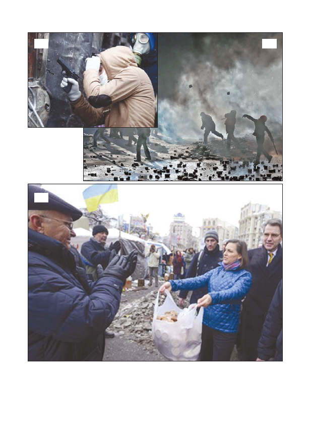
cinco
4
3
5. A secretária de Estado adjunta dos EUA, Victoria Nuland, e o embaixador dos EUA na Ucrânia, Geoffrey Pyatt, querem
apoiadores de alimentação
"
euromaidan
»
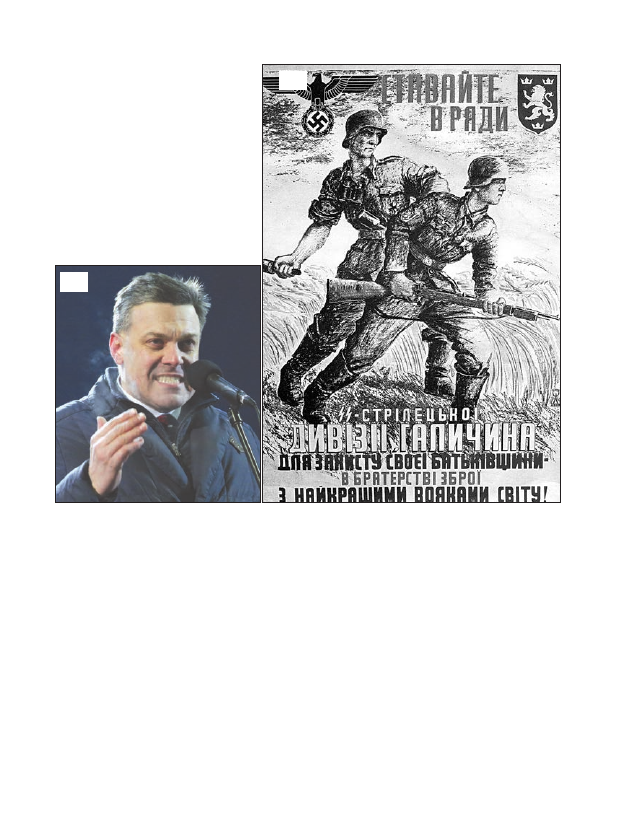
7
6
7.
Do discurso de um dos líderes da oposição Oleg Tyagnibok, que juntos
com Vitali Klitschko e Arseniy Yatsenyuk exige a renúncia do governo e do presidente,
cujos militantes nacionalistas tomam prédios administrativos:
Eles (Bandera.
- Observação. ed.
) não tiveram medo, assim como não devemos ter medo agora. Eles estão
levaram metralhadoras ao pescoço e foram para a floresta. Eles lutaram contra os moscovitas, os alemães, lutaram
com os judeus e outras maldades, que queriam tirar-nos a terra ucraniana.
Vocês, patriotas ucranianos, devem se tornar esses heróis. Temos finalmente de devolver o ucraniano
terra aos ucranianos. Você, esses jovens ucranianos, e você, de cabelos grisalhos, - essa mistura, que tem medo de -
Xia máfia moscovita-judaica
6. Cartaz de recrutamento, invertido
para a população da Ucrânia Ocidental:
"Entre nas fileiras do rifle
Divisão SS "Galiza" para proteger
pátria - em fraternidade em armas com
os melhores guerreiros do mundo!"
Belaya_kniga_11_2013-03_2014-html.html
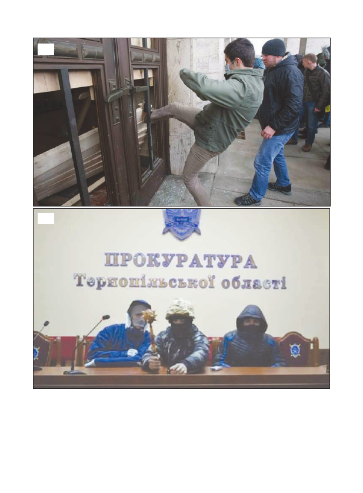
10
onze
10. Convidados indesejados no centro de Kiev ateiam fogo em casas, arrombam entradas, se envolvem em
saques
11. Os bandidos em Ternopil começaram a jogar. Pessoas com máscaras no prédio do gabinete do procurador regional
colocar as coisas em ordem com um clube
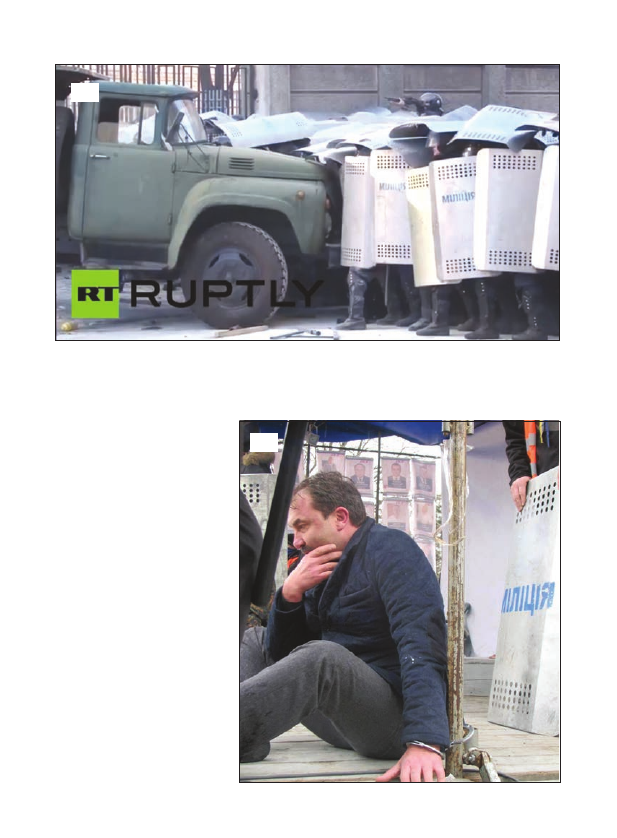
12. Manifestantes pacíficos no centro de Kiev empurram e esmagam manualmente um ZIL militar
polícia para invadir a rua Institutskaya
13. Retrato da Idade Média
kovya: cidadãos, não esperem
durante as eleições, eles administram o direito
juiz. Na foto: Capturado
militantes volyn
Governador Alexandre
Bashkalenko foi acorrentado a
palco do Euromaidan
12
13

16
quatorze
15
Belaya_kniga_11_2013-03_2014-html.html
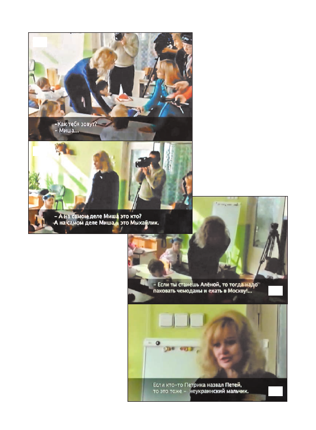
17
dezoito
19
vinte
17-20. Membro da Verkhovna Rada
da festa "Liberdade" Irina
Farion veio para o jardim de infância
Lvova e disse a Misha e Petya,
que agora o nome deles é Mykhaylik
e Petrik
Belaya_kniga_11_2013-03_2014-html.html
Belaya_kniga_11_2013-03_2014-html.html
Belaya_kniga_11_2013-03_2014-html.html
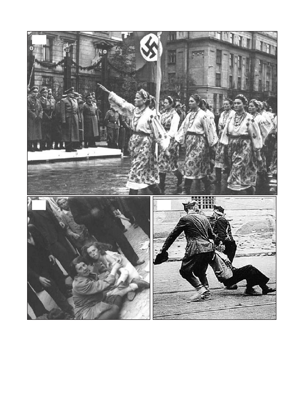
29
trinta
31
29. Desfile em Stanislaw em homenagem à visita do Governador-Geral da Polônia, Reichsleiter Hans
Franco
30-31. Bandera planejou e executou o extermínio em massa de judeus no verão de 1941.
E não só em Lviv...
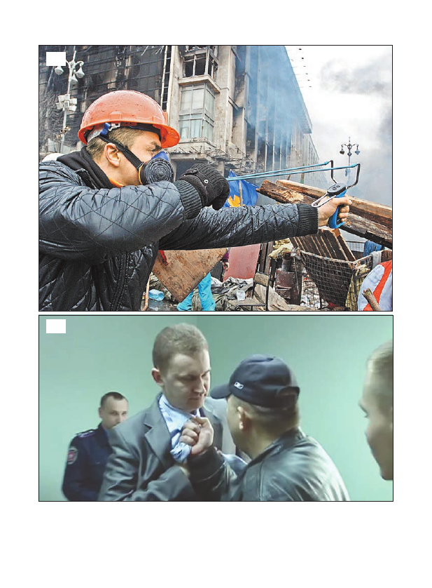
34
35
35. Coordenador do "Setor Direito" Sashko Bily explica claramente ao promotor de Rivne
região, que representa as autoridades na Ucrânia
Belaya_kniga_11_2013-03_2014-html.html
Belaya_kniga_11_2013-03_2014-html.html
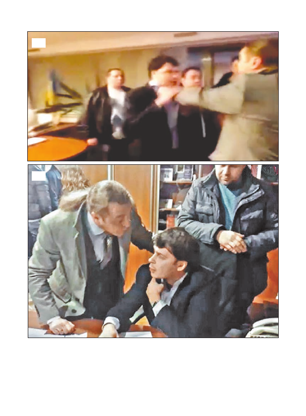
40
41
40-41. Deputados de "Svoboda" com a ajuda de punhos descobertos pelo diretor geral
Companhia Nacional de TV da Ucrânia Oleksandr Panteleymonov, por que o canal de TV
transmitir a assinatura do ato sobre a admissão da Crimeia na Rússia
Texto original
Sugerir uma tradução melhor